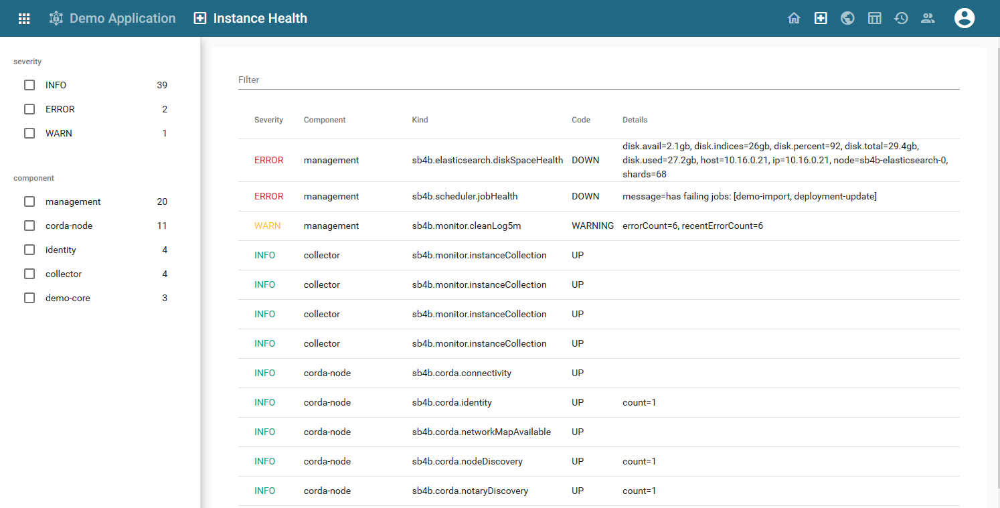
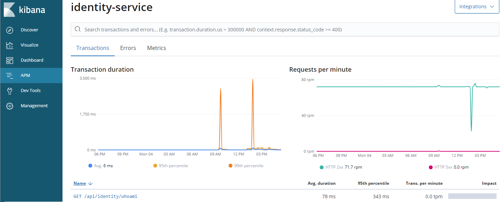

Crnk is a native resource-oriented rest library where resources, their relationships and repositories are the main building blocks. In that regard Crnk differ quite dramatically from most REST library out there and opens up many new possibilities. It allows you to rapidly build REST APIs without having to worry about lower protocol details and lets you instead focus on what matters: your application.
The [architecture] chapter goes into more details about the merits of resource-oriented APIs, how design cleaner and more consistent APIs that are easier to understand and better to maintain and evolve with a changing future.
Crnk come with support for:
-
popular frameworks like Spring Boot, JEE, Vert.x.
-
reactive and classical/blocking programming model.
-
standardized url handling: e.g.
/api/persons?filter[title]=Johnand/api/persons/{id} -
sorting, filtering, pagination.
-
attaching link and meta information to resources.
-
inserting, updating and deleting of resources.
-
support to request complex object graphs in a single request with JSON:API inclusions.
-
support for partial objects with sparse field sets.
-
atomically create, update and delete multiple with jsonpatch.com.
-
a flexible module API to choose and extend the feature set of Crnk.
-
eased testing with the client implementation providing type-safe stubs to access server repositories.
-
repositories providing runtime/meta information about Crnk to implement, for example, documentation and UI automation.
-
generation of type-safe client stubs (currently Typescript as target language implemented)
-
filters and decorates to intercept and modify all aspects of an application and Crnk.
This allows to rapidly build advanced screens like:

By default Crnk follows the JSON:API specification and recommendations. But there is also a similar, more basic endpoint targeting simpler applications.
Crnk is small, modular and lightweight. It integrates well with many popular frameworks and APIs and scale to anything from micro-services to serverless systems:
-
CDI: resolve repositories and extensions with CDI.
-
Spring: run Crnk with Spring, including support for Spring Boot, ORM, Security and Sleuth.
-
Reactor: for support of reactive programming.
-
Servlet API: run Crnk as servlet.
-
JAXRS: run Crnk as feature.
-
JPA: expose entities as JSON:API resources.
-
JSR-303 bean validation: properly marshal validation and constraints exceptions.
-
OpenTracing: trace all your calls.
While Crnk follows the JSON:API specification, it is not limited to that. Have a look at the roadmap for more information.
1. Examples
Crnk comes with various examples. There is a main example application in a dedicated repository available from crnk-example. It shows an end-to-end example with Crnk, Angular, Spring Boot and ngrx-json-api.
And there are various simpler example applications that show the integration of Crnk into various frameworks like:
-
spring-boot-example -
spring-boot-minimal-exampleshowcasing a minimal setup of Crnk with Spring Boot. -
spring-boot-microservice-exampleshowcasing how to connect two separate JSON:API endpoints through a relationship with crnk-client. -
wildfly-example -
dropwizard-mongo-example -
dropwizard-simple-example -
jersey-example -
dagger-vertx-exampleshowcasing a very lightweight setup with Dagger, Vert.x, Proguard, OpenJ9 VM having a small size, startup time and memory footprint.
available from crnk-integration-examples.
The impatient may also directly want to jump to ResourceRepository, but it is highly recommended to familiarize one self with the architecture and annotations as well. Unlike traditional REST libraries, Crnk comes with a lot of built-in semantics that allow to automate otherwise laborious tasks.
2. Architecture
Resources, relationships and repositories are the central building blocks of Crnk:
-
Resources hold data as value attributes, meta information and link information.
-
Relationships establish links between resources.
-
resource repositories and relationship repositories implement access to resources and relationships.
GET,POST,PATCH,DELETErequests allow to interact with the repositories.
A Crnk application models its API as resources and relationships. One may also call it a graph with one
wants to throw in some current buzzword. For example, for a person resource holding an address, there
are different possibilities to set it up in such a resource-oriented
way:
-
A
personresource holding address information as attribute. APATCHrequest to/api/person/{id}with the new address will update the attribute on the person accordingly. -
A
personresource, anaddressresource and a relationship between the two. Then aPATCHrequest to/api/person/{id}/relationships/addresswill trigger an update of the relationship. -
A dedicated
AddressChangeResourcethat is in a relationship with thepersonresource. Then aPOSTrequest to/api/addressChangeor/api/person/{id}/addressChange(depending on the setup) will trigger a new address change. This is the most elaborate setup and can complement theaddressrelationship from before. It allows not just to trigger a change, but also, for example, to query the current status and get a history of changes. This in turn allows to model more complex workflows where an address change may take a larger mount of time and may involve further manual steps.
The opposite to this are RPC-style APIs, where one would implement a changeAddress service taking
the person id and new address as input and performing the desired changes. Crnk
focuses on resource-oriented APIs, but still works well together with the later, for which there are already many
libraries out there such as JAX-RS and Spring MVC.
The benefits of resource-oriented APIs are:
-
A clean, consistent model of your API. Seeing it means understanding it. The semantics of resource and relationships are well established. Consumers can learn about the API by just browsing it through the provided linking.
-
Better evolution into the future. RPC-style APIs frequently suffer from many different, isolated services. Every service can basically do whatever it pleases. Over time this can lead to difficulties understanding and changing a system.
-
Better testability and mocking: By using built-in in-memory repositories and providing test data for resources, a fully running endpoint can be achieved within hours. After that can, for example, frontend and backend development take place in parallel without uncertainty about API contracts.
-
The basic yet powerful model allows for a rich set of tooling and automation to reduce the amount of custom coding. Crnk comes with support for JPA, JSR-303 validation, faceted search support, OpenTracing and more next to handling lower-layer REST details, linking and relationships.
Crnk is implemented as library rather than new framework. It almost no third-party dependencies, is lightweight in design and integrates well with many other libraries like Vert.X, JAX-RS and Spring Boot.
Crnk follows, but is not limited by the JSON:API specification to built resource-oriented APIs.
Its implementation is hosted in the crnk-core project. The JSON:API specification provides
all the essential building blocks like sorting, filtering, paging, document formats, linking and error handling to access
resources and relationships. If desired, also other protocols like GraphQL and custom REST API contract can be
implemented by updating the serialization layer of crnk-core. To understand the inner working, it is
important to know how requests are processed:
-
A Crnk interceptor is called from the underlying framework. This might be, for example, from a Servlet environment, JAX-RS or Spring MVC.
-
The request is deserialized to Crnk data structures like
Document,Resource,ResourceIdentifierorErrorData. -
The type of request is determined: whether it is a
POST,PATCH,GETorDELETErequest and whether it is a resource or relationship request. -
The request is forwarded to the appropriate repository implementation.
-
GETrequests can ask for inclusions of further, related resources. Result resources will then trigger further requests to other repositories. This can happen either manually from within the initially called repository or automatically by Crnk (explained in detail in later chapters). -
The result resources are merged into response document and returned to the underlying framework for delivery. Possible exceptions are handled as and mapped as well.
A benefit of Crnk is its flexibility how to set all this up:
-
Resources and relationships can be defined with simple Java Beans and annotations or programmatically. The later allows virtually any kind of customization at runtime. One example is
crnk-data-jpathat is able to expose any JPA entity as resource. -
Resources and relationships can be entirely decoupled concerns. A new relationship repository can introduce an additoinal relationship to existing resources. For example, an audit component could intercept and log any modifications and introduce a new relationship
historyonto each resource to access it. -
Information about resources, relationships and repositories are available trough a Java API and resource endpoint.
-
Filters and decorators allow to intercept and modify every step along the request chain. This can be used, for example, to enforce security, collect metrics or do tracing.
To facilitate the setup, Crnk comes with a small module API. Independent functionality can be assembled as module and then just included into the application. Crnk comes with a number of modules on its own:
-
crnk-data-jpa -
crnk-data-facets -
crnk-validation -
crnk-operations -
Spring modules
-
…
Such modules can make use of filters, decorators, decoupled resources and relationships and various other features. Everything together fosters the use of the composite pattern where larger applications can be assembled from smaller parts, some from third-party modules and others from manually implemented ones.
3. Setup
Crnk integrates well with many popular frameworks. The example applications outline various different possible setups. But application are also free to customize their setup to their liking. There are three main, orthogonal aspects of Crnk that need configuration:
-
The integration into a web framework like JAXRS or the Servlet API to be able to process requests.
-
The discovery of repositories, modules, exception mappers, etc. Usually by a dependency injection framework. But can also happen manually.
-
The selection of third-party modules to reuse. For a list of modules provided by Crnk see the <modules> chapter.
The subsequent sections explain various possibilities resp. how to implement a custom one. The [reactive] chapter further outlines how to setup Crnk in an asynchronous/reactive setting.
3.1. Requirements
Crnk library requires minimum Java 8 (as of Crnk 2.4) to build and run. In the future it will come with support for both the current major Java releases (9, 10, 11, etc.) and the current long-term support version that gets released every three years.
3.2. Repository
Crnk Maven artifacts are available from Bintray/JCenter.
In Gradle it looks like:
repositories {
jcenter()
}Note that due to performance/reliability issues, releases are only intermittently pushed to Maven Central. It is highly recommended for project to go with JCenter as well.
Stable releases hosted on Bintray/JCenter are also available from:
Most recent builds are available from (for a limited period of time):
3.3. BOM
With io.crnk:crnk-bom a Maven BOM is provided that manages the dependencies of all crnk artifacts.
In Gradle the setup then looks as follows:
buildscript {
dependencies {
classpath "io.spring.gradle:dependency-management-plugin:1.0.4.RELEASE"
}
}
gradle.beforeProject { Project project ->
project.with {
apply plugin: 'io.spring.dependency-management'
dependencyManagement {
imports {
mavenBom "io.crnk:crnk-bom:$CRNK_VERSION"
}
}
}
}The crnk modules can then simply be used without having to specify a version:
dependencies {
compile 'io.crnk:crnk-rs'
compile 'io.crnk:crnk-setup-spring-boot2'
...
}3.4. Logging
Crnk makes use of SLF4J to do logging. Make sure to have the API properly setup. For example by making use of Logback or one of the many bridges to other Logging frameworks.
|
Tip
|
Set io.crnk to DEBUG if you encounter any issues during setup or later at runtime.
|
3.5. Integration with JAX-RS
Crnk allows integration with JAX-RS environments through the usage of JAX-RS specification. JAX-RS 2.0 is required for this integration. Under the hood there is a @PreMatching filter which checks each request for JSON:API processing. The setup can look as simple as:
3.5.1. CrnkFeature
@ApplicationPath("/")
public class MyApplication extends Application {
@Override
public Set<Object> getSingletons() {
CrnkFeature crnkFeature = new CrnkFeature();
return Collections.singleton((Object)crnkFeature);
}
}CrnkFeature provides various accessors to customize the behavior of Crnk.
A more advanced setup may look like:
public class MyAdvancedCrnkFeature implements Feature {
@Inject
private EntityManager em;
@Inject
private EntityManagerFactory emFactory;
...
@Override
public boolean configure(FeatureContext featureContext) {
// also map entities to JSON:API resources (see further below)
JpaModule jpaModule = new JpaModule(emFactory, em, transactionRunner);
jpaModule.setRepositoryFactory(new ValidatedJpaRepositoryFactory());
// limit all incoming requests to 20 resources if not specified otherwise
DefaultQuerySpecUrlMapper urlMapper = new DefaultQuerySpecUrlMapper();
urlMapper.setDefaultLimit(20L);
ServiceLocator serviceLocator = ...
CrnkFeature feature = new CrnkFeature();
feature.addModule(jpaModule);
feature.getBoot().setUrlMapper(urlMapper);
featureContext.register(feature);
return true;
}
}Crnk will install a JAX-RS filter that will intercept and process any Crnk-related request.
Note that depending on the discovery mechanism in use (like Spring or CDI), modules like this JpaModule can be picked up automatically and do not manual registration.
3.5.2. Exception mapping for JAX-RS services
In many cases Crnk repositories are used along regular JAX-RS services. In such scenarios it can be worthwhile
if Crnk repositories and JAX-RS services make use of the same exception handling and response format. To make
use of the JSON:API resp. Crnk exception handling in JAX-RS services, one can add the
ExceptionMapperBridge to the JAX-RS application. The constructor of ExceptionMapperBridge
takes CrnkFeature as parameter.
For an example have a look at the next section which make use of it together with JsonApiResponseFilter.
3.5.3. Use JSON:API format with JAX-RS services
Similar to ExceptionMapperBridge in the previous section, it is possible for JAX-RS services to return
resources in JSON:API format with JsonApiResponseFilter. JsonApiResponseFilter wraps primitive
responses with a data object; resource objects with data and included objects.
The constructor of JsonApiResponseFilter takes CrnkFeature as parameter.
To determine which JAX-RS services should be wrapped, JsonApiResponseFilter checks whether the
@Produce annotation delivers JSON:API. The produce
annotation can be added, for example, to the class:
@Path("schedules")
@Produces(HttpHeaders.JSONAPI_CONTENT_TYPE)And the JAX-RS application setup looks like:
@ApplicationPath("/")
class TestApplication extends ResourceConfig {
TestApplication(JsonApiResponseFilterTestBase instance, boolean enableNullResponse) {
instance.setEnableNullResponse(enableNullResponse);
property(CrnkProperties.NULL_DATA_RESPONSE_ENABLED, Boolean.toString(enableNullResponse));
CrnkFeature feature = new CrnkFeature();
feature.addModule(new TestModule());
register(new JsonApiResponseFilter(feature));
register(new JsonapiExceptionMapperBridge(feature));
register(new JacksonFeature());
register(feature);
}
}Note that CrnkProperties.NULL_DATA_RESPONSE_ENABLED determines whether null responses should be wrapped
as JSON:API responses.
3.5.4. JAX-RS service interoperability
It is possible to implement repositories that host both JAX-RS and JSON-API methods to complement JSON API repositories with non-resource based services. Have a look at the Crnk Client chapter for an example.
3.6. Integration with Servlet API
There are two ways of integrating crnk using Servlets:
-
Adding an instance of
CrnkServlet -
Adding an instance of
CrnkFilter
3.6.1. Integrating using a Servlet
There is a CrnkServlet implementation allowing to integrate Crnk into a Servlet environment.
It can be configured with all the parameters outlined in the subsequent sections. Many times
application will desire to do more advanced customizations, in this case one can
extends CrnkServlet and get access to CrnkBoot. The code below shows a sample implementation:
public class SampleCrnkServlet extends CrnkServlet {
@Override
protected void initCrnk(CrnkBoot boot) {
// do your configuration here
}
}The newly created servlet must be added to the web.xml file or to another deployment descriptor.
The code below shows a sample web.xml file with a properly defined and configured servlet:
<web-app>
<servlet>
<servlet-name>SampleCrnkServlet</servlet-name>
<servlet-class>io.crnk.servlet.SampleCrnkServlet</servlet-class>
<init-param>
<!-- can typically be ommitted and is auto-detected -->
<param-name>crnk.config.core.resource.domain</param-name>
<param-value>http://www.mydomain.com</param-value>
</init-param>
</servlet>
<servlet-mapping>
<servlet-name>SampleCrnkServlet</servlet-name>
<url-pattern>/api/v1/ *</url-pattern>
</servlet-mapping>
</web-app>init-param allow to pass configuration flags to Crnk. For a list of properties see here.
3.6.2. Integrating using a filter
Integrating Crnk as a Servlet filter works in a very similar fashion as for servlets:
public class SampleCrnkFilter extends CrnkFilter {
@Override
protected void initCrnk(CrnkBoot boot) {
// do your configuration here
}
}The newly created filter must be added to web.xml file or other deployment descriptor.
A code below shows a sample web.xml file with properly defined and configured filter
<web-app>
<filter>
<filter-name>SampleCrnkFilter</filter-name>
<filter-class>io.crnk.servlet.SampleCrnkFilter</filter-class>
<init-param>
<!-- can typically be ommitted and is auto-detected -->
<param-name>crnk.config.core.resource.domain</param-name>
<param-value>http://www.mydomain.com</param-value>
</init-param>
</filter>
</web-app>init-param allow to pass configuration flags to Crnk. For a list of properties see here.
3.7. Integration with Spring and Spring Boot
Crnk provides with:
-
io-crnk:crnk-setup-springsupport for plain Spring 4 and 5. -
io-crnk:crnk-setup-spring-boot1support for Spring Boot 1.x. This module is considered being deprecated and will be removed in the future. -
io-crnk:crnk-setup-spring-boot2support for Spring Boot 2.x.
There is a CrnkCoreAutoConfiguration in crnk-setup-spring-boot2 that outlines
the basic setup that can easily be applied to a Spring-only setup without Spring Boot using crnk-setup-spring:
-
It uses the
CrnkFilterservlet filter to process requests. -
Service discovery is performed with
SpringServiceDiscoveryusing the SpringApplicationContext.
io-crnk:crnk-setup-spring-boot1 and io-crnk:crnk-setup-spring-boot2 host Spring Boot auto configurations
that are enabled if the presence of the particular Crnk module and/or Spring component. Each auto configuration
can be enabled and disabled and may host further properties to reconfigure it. The following auto configurations are available:
-
CrnkHomeAutoConfiguration -
CrnkCoreAutoConfiguration -
CrnkValidationAutoConfiguration -
CrnkJpaAutoConfiguration -
CrnkMetaAutoConfiguration -
CrnkOperationsAutoConfiguration -
CrnkUIAutoConfiguration -
CrnkSecurityAutoConfiguration -
CrnkSpringMvcAutoConfiguration -
CrnkErrorControllerAutoConfiguration -
CrnkTomcatAutoConfiguration
The most important one is CrnkCoreAutoConfiguration to setup the core of Crnk. Its main properties are:
crnk.enabled=true
crnk.domain-name=http://localhost:8080
crnk.path-prefix=/api
crnk.default-page-limit=20
crnk.max-page-limit=1000
crnk.allow-unknown-attributes=false
crnk.return404-on-null=trueSee CrnkCoreProperties
and the various auto configurations for more information. Next to configuration properties there is also the possibility to provide a Configurer implementation
to gain programmatic access to module configurations. The following Configurer are available:
-
CrnkBootConfigurer -
JpaModuleConfigurer -
SecurityModuleConfigurer -
MetaModuleConfigurer
Next to all the auto configurations there are also a number of further Spring-specific modules:
-
SpringSecurityModuleprovides a mapping of Spring Security exception types to JSON:API errors that complements the Spring-independentSecurityModule. Auto configuration is provided byCrnkSecurityAutoConfiguration. It sets upSecurityModuleandSpringSecurityModule. By default access to all repositories is blocked. A bean of typeSecurityModuleConfigurercan be added to grant access to repositories. -
SpringTransactionRunnerlets all requests run in a transaction. If the request completes, the transaction is committed. In case of an error, the transaction is rolled back. -
Spring MVC Module makes Spring MVC services available in the Crnk Home Module next to the JSON:API repositories to have a list of all offered services. Auto configuration is provided by
CrnkSpringMvcAutoConfiguration. -
With
CrnkErrorControllerconfigured byCrnkErrorControllerAutoConfigurationadditionally a new error controller is provided that returns errors in JSON:API format.crnk.spring.mvc.errorController=falseallows to disable the controller.
3.8. Integration with Vert.x
|
Caution
|
Reactive programming support has been introduced in Crnk 2.6 and is still considered experimental with some limitations. Please also provide feedback about this Vert.x integration. |
Crnk integrates with Vert.x RxJava 2 using crnk-reactive and crnk-setup-vertx. More information about
reactive programming is available here. To make use of Crnk with Vert.x, make sure you have
the following dependencies specified:
compile 'io.crnk:crnk-setup-vertx'
compile 'io.vertx:vertx-rx-java2'An example Vert.x vehicle may then look like:
public class CrnkVerticle extends AbstractVerticle {
private static final Logger LOGGER = LoggerFactory.getLogger(CrnkVerticle.class);
public ReactiveTestModule testModule = new ReactiveTestModule();
private int port;
private CrnkVertxHandler handler;
public CrnkVerticle(int port) {
this.port = port;
handler = new CrnkVertxHandler((boot) -> {
boot.addModule(HomeModule.create());
boot.addModule(testModule);
});
}
@Override
public void start() {
HttpServer server = vertx.createHttpServer();
server.requestStream().toFlowable()
.flatMap(request -> handler.process(request))
.subscribe((response) -> LOGGER.debug("delivered response {}", response), error -> LOGGER.debug("error occured", error));
server.listen(port);
}
public CrnkBoot getBoot() {
return handler.getBoot();
}
}CrnkVertxHandler holds the Crnk setup. Its constructor takes a Consumer<CrnkBoot> that allows the customization
of Crnk. The example makes use of it to register two modules. CrnkVertxHandler.process is the main method
that allows to process HttpServerRequest objects of Vert.x.
3.9. Tomcat Setup
There is a bit of a controversy about which characters to encode or not encode in URLs based on
RFC 7230 and RFC 3986. JSON:API is affected in that regard due to the use of [ and ].
Browser vendors have yet to endorse those RFCs. But unfortunately, Tomcat already started
to enforce the RFCs from their side. As such it is useful to
relax the [ and ] characters to simplify development with JSON:API, like entering
URLs manually in the browser. For this purpose relaxedPathChars can be set to [], for more information
see:
The Spring Boot auto configuration already does this out-of-the-box.
|
Important
|
There is no weakened security out of this as long as parameters are not used in some obscure fashion. |
3.10. Discovery with CDI
To enable CDI support, add io.crnk:crnk-cdi to your classpath. Crnk will then pickup the
CdiServiceDiscovery implementation and use it to discover its modules and repositories. Modules, repositories,
etc. will then be picked up if they are registered as CDI beans.
By default Cdi.current() is used to obtain a BeanManager. The application may also make use of
CdiServiceDiscovery.setBeanManager(…) to set a custom one. The various integrations like CrnkFeature provide
a setServiceDiscovery method to set a customized instance.
|
Warning
|
Cdi.current() has shown to be unreliable in some cases when doing EAR deployment. In such cases
it is highly recommended to set the BeanManager manually.
|
3.11. Discovery with Guice
A GuiceServiceDiscovery implementation is provided. The various integrations like CrnkFeature provide
a setServiceDiscovery method to set the instance. For an example have a look at the dropwizard example
application (https://github.com/crnk-project/crnk-framework/tree/master/crnk-integration-examples/dropwizard-simple-example).
3.12. Discovery with Spring
The Spring integration comes with a SpringServiceDiscovery that makes use of the Spring ApplicationContext
to discover beans.
3.13. No Discovery
It is also possible to make use of no discovery mechanism at all. In this case it is still possible to add repositories and other features through modules. A simple example looks like:
SimpleModule module = new SimpleModule("example");
module.addRepository(new ProjectRepository());
CrnkFeature crnkFeature = new CrnkFeature();
crnkFeature.addModule(module);
environment.jersey().register(crnkFeature);Have a look at the various [modules] chapters for more information.
3.14. Implement a custom discovery mechanism
Application can bring along there own implementation of ServiceDiscovery. For more information
see here.
3.15. CrnkBoot
CrnkBoot is a class shared among all the different integrations that takes care of setting up and starting
Crnk. Every integration will provide access to it:
-
CrnkFeature.getBoot()for JAX-RS. -
@Autowired CrnkBoot bootfor Spring. -
CrnkServlet.getBoot()orCrnkServlet.initBoot(…)in case of a subclass. -
CrnkVertxHandler.getBoot()for Vert.x.
CrnkBoot allows for virtually any kind of customization not directly provided by the integration itself, such as Spring Boot
auto configurations and properties. Some possibilities:
-
getObjectMapperallows access to the used Jackson instance. -
addModuleallows to add a module. See <modules> and <moduledev,module development> chapters for more information. -
setServiceDiscoverysets a custom service discovery mechanism. -
setPropertiesProviderallows to set how properties are resolved. -
getQuerySpecDeserializerandsetQuerySpecDeserializerallows to reconfigure how parameters are parsed. Note that in some areas JSON:API only provides reocmmendations and Crnk follows those recommendations by default. So depending on your use cases, you may want to configure or implement some aspects differently. -
setMaxPageLimitallows to set the maximum number of allowed resources that can be fetched with a request by limiting pagination. -
setDefaultPageLimitallows to set a default page limit if none is specified by the request. Highly recommended to be used as people frequently browse repositories on there own with a web browser and fail to provide pagination. As a result, your entire database may get downloaded and may bring down your servers depending on the datasize. -
setWebPathPrefixlike/apito specify the path from where the JSON:API endpoint is available. -
setUrlMapperto provide a new url mapping implementation to customize how Crnk generates links. -
getResourceRegistryto access the available JSON:API resources and repositories. -
setAllowUnknownAttributesto ignore unknown filter and sort attributes. -
setAllowUnknownParametersto ignore query parameters not specified by JSON:API (filter,sort, etc.).
|
Important
|
Appropriate page limits are vital to protect against denial-of-service attacks when working with large data sets! Such attacks may not be of malicious nature, but normal users using a browser and just omitting to specify pagination parameters. |
3.16. Properties
Any of the integrations allows API access to customize Crnk. There are also a number of configuration flags
provided by CrnkProperties:
-
crnk.config.core.resource.domainDomain name as well as protocol and optionally port number used when building links objects in responses i.e. http://crnk.io. The value must not end with/. If the property is omitted, then they are extracted from the incoming request, which should work well for most use cases. -
crnk.config.web.path.prefixDefault prefix of a URL path used in two cases:-
When building
linksobjects in responses -
When performing method matching An example of a prefix
/api/v1.
-
-
crnk.config.include.paging.packagingEnabledenables pagination for inclusions. Disabled by default. Be aware this may inadvertently enable pagination for included resources when doing paging on root resources if data structures are cyclic. SeeCrnkProperties.INCLUDE_PAGING_ENABLEDfore mor information. -
crnk.config.lookup.behavior.defaultspecifies the default lookup behavior for relationships. For more information see @JsonApiRelation. -
crnk.config.include.behaviorwith possible valuesBY_TYPE(default) andBY_ROOT_PATH.BY_ROOT_PATHspecifies that an inclusion can only requested as path from the root resource such asinclude[tasks]=project.schedule. WhileBY_TYPEcan further request inclusions by type directly such asinclude[tasks]=project&include[projects]=schedule. For simple object structures they are semantically the same, but they do differ for more complex ones, like when multiple attributes lead to the same type or for cycle structures. In the later case BY_TYPE inclusions become recursive, while BY_ROOT_PATH do not. Note that the use of BY_TYPE outmatches BY_ROOT_PATH, so BY_TYPE includes everything BY_ROOT_PATH does and potentially more. For more information seeCrnkProperties.INCLUDE_BEHAVIOR. -
crnk.config.resource.immutableWritewith values IGNORE (default) or FAIL. Determines how to deal with field that cannot be changed upon a PATCH or POST request. For more information seeCrnkProperties.RESOURCE_FIELD_IMMUTABLE_WRITE_BEHAVIOR. -
crnk.config.resource.response.return_404with values true and false (default). Enforces a 404 response should a repository return a null value. This is common practice, but not strictly mandated by the JSON:API specification. In general it is recommended for repository to throwResourceNotFoundException. -
crnk.config.serialize.object.linksto serialize links as objects. See http://jsonapi.org/format/#document-links. Disabled by default. -
crnk.config.resource.request.rejectPlainJsonwhether to reject GET requests withapplication/jsonaccept headers and enforceapplication/vnd.api+json. Disabled by default. -
crnk.config.resource.request.allowUnknownAttributeslets Crnk ignore unknown filter and sort parameters. Disabled by default. -
crnk.config.serialize.object.linksdetermines whether links should be serialized as simple string (default) or as objects (with aselfattribute holding the url). -
crnk.config.resource.request.rejectPlainJsondetermines whether Crnk should rejectapplication/jsonrequests to JSON-API endpoints. Disabled by default. The JSON-API specification mandates the use of theapplication/vnd.api+jsonMIME-Type. In cases where frontends or intermediate proxies prefer theapplication/jsonMIME-Type, that type can be sent in theAcceptheader instead. If an application wants to serve a different response depending on whether the client’sAcceptheader containsapplication/vnd.api+jsonorapplication/json, this option can be enabled. This *does not affect the payloadContent-Type.POSTandPATCHrequests must still useContent-Type: application/vnd.api+jsonto describe their request body -
If
crnk.enforceIdNameis set totrueall@JsonApiIdannotated fields will be namedidon the rest layer (for sorting, filtering, etc.) regardless of its Java name. By default this is not enabled for historic reasons. But enabling it more closely reflects the JSON:API specification and is recommended to do so. It likely will be enabled in Crnk 3 by default.
3.17. Serving Directory Listings with the Home Module
The HomeModule provides a listing of available resources in each directory (such as the root /api/). Note that
directory paths always end with a '/' and the HomeModule will process the request if there is no resource or
relationship repository serving that particular path.
The HomeModule supports two kinds of formats that can be choosen upon creation. A JSON:API-style format where a
links node holds all links to child directories and repositories. And a JSON HOME format as specified by
JSON Home.
HomeModule metaModule = HomeModule.create();
...In the Spring Boot example applications it looks like:
{
"links" : {
"meta" : "http://localhost:8080/api/meta/",
"projects" : "http://localhost:8080/api/projects",
"resourcesInfo" : "http://localhost:8080/api/resourcesInfo",
"schedule" : "http://localhost:8080/api/schedule",
"scheduleDto" : "http://localhost:8080/api/scheduleDto",
"tasks" : "http://localhost:8080/api/tasks"
}
}Notice the meta entry with a trailing '/' that allows to move to subdirectory http://localhost:8080/api/meta/:
{
"links" : {
"arrayType" : "http://localhost:8080/api/meta/arrayType",
"attribute" : "http://localhost:8080/api/meta/attribute",
"dataObject" : "http://localhost:8080/api/meta/dataObject",
"element" : "http://localhost:8080/api/meta/element",
"resource" : "http://localhost:8080/api/meta/resource",
"type" : "http://localhost:8080/api/meta/type"
...
}
}3.18. Setting up the Crnk UI
|
Warning
|
The UI is currently in an early stage. Feature requests and PRs welcomed! |
The UI module makes crnk-ui accessible trough the module system. It allows to browse and edit all the repositories
and resources. The setup looks like:
UIModule operationsModule = UIModule.create(new UIModuleConfig());
...By default the user interface is accessible from the /browse/ directory next to all the repositories.
Have a look at the Spring Boot example application to see a working example.
This module is currently in incubation. Please provide feedback.
An example from the Spring Boot example application looks like:

4. Resource
A resource as defined by JSON:API holds the actual data. The engine part of crnk-core is agnostic to how such resources are
actually implemented (see the [architecture] and [modules] chapters). This chapter describes the most common
way Java Beans and annotations. See here for more information how setup resources and repositories
programmatically at runtime.
4.1. JsonApiResource
It is the most important annotation which defines a resource. It requires type parameter to be defined that is used to form a URLs and type field in passed JSONs. According to JSON:API standard, the name defined in type can be either plural or singular
The example below shows a sample class which contains a definition of a resource.
@JsonApiResource(type = "tasks")
public class Task {
// fields, getters and setters
}where type parameter specifies the resource’s name.
By default the type of a resource in a JSON:API document and its name within URLs match, for example:
{
"links": {
"self": "http://localhost/api/tasks",
},
"data": [{
"type": "tasks",
"id": "1",
"attributes": {
"title": "Some task"
}
}
}The optional resourcePath allows to define separate values, typically with resourcePath being plural and
type being singular:
@JsonApiResource(type = "task", resourcePath = "tasks")
public class Task {
// fields, getters and setters
}resulting in (notice the self link does not change, but type does):
{
"links": {
"self": "http://localhost/api/tasks",
},
"data": [{
"type": "task",
"id": "1",
"attributes": {
"title": "Some task"
}
}
}The optional pagingSpec parameter allows to set the desired paging specification:
@JsonApiResource(type = "tasks", pagingSpec = OffsetLimitPagingSpec.class)
public class Task {
// fields, getters and setters
}There is built-in support for OffsetLimitPagingSpec (default) or NumberSizePagingSpec. The paging spec must
be backed by a matching PagingBehavior implementation. More detailed information about pagination can be
found at Pagination section.
The optional subTypes parameter allows to specify an inheritance relationship to other resources:
@JsonApiResource(type = "task", subTypes = SpecialTask.class)
public class Task {
// fields, getters and setters
}
@JsonApiResource(type = "specialTask", resourcePath = "task")
public class SpecialTask extends Task{
// fields, getters and setters
}In this case the SpecialTask extends Task but shares the same resourcePath, meaning SpecialTask does not bring along
a repository implementation (see next chapter), but is served by the task repository. For a more information have a look at the
[inheritance] section.
@JsonApiResource has properties to configure the allowed access modes to a resource: sortable, filterable, postable, readable, patchable and deletable. An example looks like:
@JsonApiResource(type = "tasks",
postable = false, readable = false, patchable = false, deletable = false,
sortable = false, filterable = false
)
public static class AccessDeniedTestResource {
@JsonApiId
public String id;
public String value;
}The properties match the ones from @JsonApiField and provide the base line for it. For example, if a resource does not allow filtering, none of its fields will either. If one of those properties is attempted to be violated, an error is thrown.
4.2. JsonApiId
Defines a field which will be used as an identifier of a resource.
Each resource requires this annotation to be present on a field which type implements Serializable or is of primitive type.
The example below shows a sample class which contains a definition of a field which contains an identifier.
@JsonApiResource(type = "tasks")
public class Task {
@JsonApiId
private Long id;
// fields, getters and setters
}4.3. JsonApiRelation
Indicates a relationship to either a single value or collection of resources. The type of such fields
must be a valid resource. The next example showcases a bi-directional relationship between Task and Project:
@JsonApiResource(type = "tasks")
public class Task {
@JsonApiRelation
private Project project;
...
}
@JsonApiResource(type = "project")
public class Project {
@JsonApiRelation(mappedBy="project")
private Set<Task> tasks;
...
}The project and tasks field are linked through the mappedBy property by pointing from the non-owning
to the owning field of the relationship. project as owning field will be used for all read and update operations. This
means:
-
for
GET /api/projects?include=tasksandGET /api/projects/{id}/tasks, first the projects are loaded and then a query is issued against the repository ofTaskwith a filterproject.id = {list of project ids}. -
for
PATCH/POST/DELETE /api/project/{id}/tasks, the request is forwarded to theTaskrepository by setting theprojectfield and saving the updated resources. -
for
PATCH/POST /api/projects/{id}thetasksattribute can by default not be modified because it is not the owner of the relationships. But repositories are free to implement this functionality if desired.
Behind the scenes mappedBy makes use of the FORWARD_OPPOSITE repository behavior whereas the opposite
makes use of FORWARD_OWNER that are explained further down in this section. As such mappedBy can be
considered to be a shortcut for setting various other notifications that is useful in many scenarios.
The semantics of mappedBy matches with the concepts of, for example, JPA-related annotations.
It is typical for single-valued fields like project to be the owner. Such fields are usually backed by something like
a column in a database and are simple to read and write. In contrast,
multi-valued fields like tasks can only be obtained by issuing a query against the single-valued counter-part.
In such a setting, it might proof useful to to make use of @JsonApiRelationId
on the owning side (introduced in the next section).
@JsonApiRelation comes with a number of attributes to customize its behavior. @JsonApiRelationId as complementary annotation is introduced in the subsequent section.
@JsonApiRelation(serialize = SerializeType.ONLY_ID)
private Project project;The optional serialize parameter specifies how an association should be serialized when making a request.
There are two things to consider. Whether related resources should be added to the include section of the
response document. And whether the id of related resources should be serialized along with the resource
in the corresponding relationships.[name].data section. Either LAZY, ONLY_ID or EAGER can be specified:
-
LAZYonly serializes the ID and does the inclusion if explicitly requested by theincludeURL parameter. This is the default. -
ONLY_IDalways serializes the ID, but does only to an inclusion if explicitly requested by theincludeURL parameter. -
EAGERalways both serializes the ID and does an inclusion. Be aware of performance implication when enabling this.
@JsonApiRelation(lookUp = LookupIncludeBehavior.AUTOMATICALLY_ALWAYS)
private Project project;JSON:API comes with support for inclusions based on the include parameter. It allows to request complex
object graphs where also related resources can be fetched. There are two possibilities of how this is implemented.
Either the requested repository also directly returns related resources with the returned ones. Or Crnk can take-over that
work by doing nested calls to adjacent ResourceRepository, OneRelationshipRepository and ManyRelationshipRepository
implementations. The behavior is controlled by the optional lookUp parameter. There are four options:
-
NONEmakes the requested repository responsible for returning related resources. -
AUTOMATICALLY_WHEN_NULLwill let Crnk lookup related resources if not already done by the requested repository. -
AUTOMATICALLY_ALWAYSwill force Crnk to always lookup related resource regardless whether it is already done by the requested repository. -
DEFAULTattempts to find the optimal setting automatically. If a custom relationship repository is found,@JsonApiRelationIdis in use or@JsonApiRelation.repositoryBehaviorfetches from the opposite side, thenAUTOMATICALLY_WHEN_NULLis chosen, otherwise it falls back toNONE. This default behavior should be sufficient for most use cases.
There are many different ways how a relationship may end-up being implemented. In the best case, no implementation is necessary
at all and requests can be dispatches to one of the two related resource repositories. The repositoryBehavior allows
to configure behavior:
-
CUSTOMexpects a custom implementation. -
FORWARD_OWNERforward any relationship request to the owning resource repository, the repository that defines the requested relationship field. GET requests will fetch the owning resources and grab the related resources from there (with the appropriate inclusion parameter). This assumes that the owning resource properties hold the related resources (or at least there IDs in case ofJsonApiRelationId, see below). POST, PATCH, DELETE requests will update the properties of the owning resource accordingly and invoke a save operation on the owning resource repository. An implementation is provided byImplicitOwnerBasedRelationshipRepository. -
FORWARD_GET_OPPOSITE_SET_OWNERworks likeFORWARD_OWNERfor PATCH, POST, DELETE methods. In contrast, GET requests are forwarded to the opposite resource repository. For example, if there is a relationship betweenTaskandProjectwith theprojectandtasksrelationship fields. To get all tasks of a project, the task repository will be queried with aproject.id=<projectId>filter parameter. Relational database are one typical example where this pattern fits nicely. In contract toIMPLICIT_FROM_OWNERonly a single resource repository is involved with a slightly more complex filter parameter, giving performance benefits. An implementation is provided byRelationshipRepositoryBase. -
FORWARD_OPPOSITEthe opposite toFORWARD_OWNER. Querying works likeIMPLICIT_GET_OPPOSITE_MODIFY_OWNER. -
DEFAULTmakes use ofFORWARD_OWNERif the relationship makes use of@JsonApiRelationId(see below),lookUp=NONEorlookUp=DEFAULT.FORWARD_OPPOSITEifmappedBypoints to another field.CUSTOMif a matching relationship repository is found. For all other scenarios it it expects a custom implementation.
The forwarding behaviors are implemented by ForwardingRelationshipRepository.
The subsequent two resources show case a number of scenarios:
@JsonApiResource(type = "task")
public class Task {
@JsonApiId
public String id;
@JsonApiRelation // not backed by repository
public Project project;
@JsonApiRelation // backed by repository
public List<Task> subTasks;
}
@JsonApiResource(type = "project")
public class Project {
@JsonApiId
public String id;
@JsonApiRelation(mappedBy = "project")
public Set<Task> tasks;
@JsonApiRelationId
public Project parentId;
@JsonApiRelation
public Project parent;
}
class SubTaskRepository extends OneRelationshipRepositoryBase {
@Override
public RelationshipMatcher getMatcher() {
RelationshipMatcher matcher = new RelationshipMatcher();
matcher.rule().field("subTasks").add();
return matcher;
}
...
}-
parenthas a@JsonApiRelationIdbacked byparentId. This triggers the use ofRelationshipRepositoryBehavior.FORWARD_OWNERandLookupIncludeBehavior.AUTOMATICALLY_WHEN_NULL. OnlyparentIdmust be populated by the project resource repository,projectcan then be looked up on the opposite resource repository (which in this case is the same repository). -
projectjust carries an empty@JsonApiRelationand has no relationship repository backing it. This triggers the assumption that the resource repository can handle all requests, translating toLookupIncludeBehavior.NONEandRelationshipRepositoryBehavior.FORWARD_OWNER. -
tasksdeclares amappedByto its ownerproject. Accordingly all requests go withRelationshipRepositoryBehavior.FORWARD_OPPOSITEto the opposite task resource repository. Inclusions are resolved automatically withLookupIncludeBehavior.AUTOMATICALLY_WHEN_NULL. -
subTasksis backed by theSubTaskRepositoryrelationship repository. This setsRelationshipRepositoryBehavior.CUSTOMand performs look-ups on that repository withLookupIncludeBehavior.AUTOMATICALLY_WHEN_NULLto compute the inclusions.
|
Important
|
It likely takes a moment to familiarize oneself with all configuration options of @JsonApiRelation and the
subsequent @JsonApiRelationId. But at the same time it is one area where a native resource-oriented REST library like Crnk
can provide significant benefit and reduce manual work compared to more classical REST libraries like Spring MVC or JAX-RS.
|
|
Important
|
If you run into problems in this area, set io.crnk to DEBUG in your logger. It will print information such as:
|
20:04:50 DEBUG io.crnk.test.mock.models.Schedule.project: using configured LookupIncludeBehavior.AUTOMATICALLY_WHEN_NULL
20:04:50 DEBUG io.crnk.test.mock.models.Schedule.projects: using configured LookupIncludeBehavior.AUTOMATICALLY_WHEN_NULL
20:04:50 DEBUG io.crnk.test.mock.models.Schedule.tasks: choosing default RelationshipRepositoryBehavior: mappedBy enforces FORWARD_OPPOSITE
20:04:50 DEBUG io.crnk.test.mock.models.Schedule.tasks: setting up opposite/opposite forwarding repository
20:04:50 DEBUG io.crnk.test.mock.models.Schedule.tasks: RelationshipRepositoryBehavior.FORWARD_OPPOSITE enforces LookupIncludeBehavior.AUTOMATICALLY_WHEN_NULL to resolve relationship from opposite side
20:04:50 DEBUG io.crnk.test.mock.models.Schedule.project: choosing default RelationshipRepositoryBehavior: relationId field enforces FORWARD_OWNER
20:04:50 DEBUG io.crnk.test.mock.models.Schedule.project: setting up owner/owner forwarding repository
20:04:50 DEBUG io.crnk.test.mock.models.Schedule.projects: choosing default RelationshipRepositoryBehavior: relationId field enforces FORWARD_OWNER
20:04:50 DEBUG io.crnk.test.mock.models.Schedule.projects: setting up owner/owner forwarding repository4.4. JsonApiRelationId
Fields annotated with @JsonApiRelation hold fully-realized related resources. There are situations
where the id of a related resource is available for free or can be obtained much more cheaply then
fetching the entire related resource. In this case resources can make use of fields annotated with
@JsonApiRelationId. The complement @JsonApiRelation fields by holding there ID only.
An example looks like:
@JsonApiResource(type = "schedules")
public class Schedule {
...
@JsonApiRelationId
private Long projectId;
@JsonApiRelation
private Project project;
public Long getProjectId() {
return projectId;
}
public void setProjectId(Long projectId) {
this.projectId = projectId;
this.project = null;
}
public Project getProject() {
return project;
}
public void setProject(Project project) {
this.projectId = project != null ? project.getId() : null;
this.project = project;
}
}Notice that:
- Schedule resource holds both a project and projectId field that point to the same related resource.
- setters must set both properties to make sure they stay in sync. If only the ID is set, the object must be nulled.
- propertyId will never show in requests and responses. It can be considered to be transient.
- Bi-directional relationships can simply make use of @JsonRelationId(mappedBy="project") on the other side.
By default, the naming convention for @JsonApiRelationId field is to end with a Id or Ids suffix. Crnk will
the pair those two objects automatically. Trailing s are ignored for multi-valued fields, meaning that projectIds matches with
projects. But it is also possible to specify a custom name, for example:
@JsonApiRelationId
private Long projectFk;
@JsonApiRelation(idField = "projectFk")
private Project project;If a @JsonApiRelationId field cannot be matched to a @JsonApiRelation field, an exception will be thrown.
@JsonApiRelationId fields are used for:
-
GETrequests to fill-in thedatasection of a relationship. -
POSTandPATCHrequests to fill-in the new value without having to fetch and set the entire related resource.
Further (substantial) benefit for @JsonApiRelationId fields is that no RelationshipRepository
must be implemented. Instead Crnk will automatically dispatch relationship requests to the owning and
opposite ResourceRepository. This allows to focus on the development of ResourceRepository.
See RelationshipRepository for more information.
Next to plain Java objects, many other libraries support this kind of semantic of having two attributes referring to the same data. For example in JPA this looks like:
@JsonApiRelationId
@Column(name = "project_id")
private Long projectId;
@OneToOne(fetch = FetchType.LAZY)
@JoinColumn(name = "project_id", insertable = false, updatable = false)
private ProjectEntity project;Because two fields are mapped to the same column, one must be set to a read-only mode.
4.5. JsonApiMetaInformation
Field or getter annotated with JsonApiMetaInformation are marked to carry a MetaInformation implementation.
See http://jsonapi.org/format/#document-meta for more information about meta data. Example:
@JsonApiResource(type = "projects")
public class Project {
...
@JsonApiMetaInformation
private ProjectMeta meta;
public static class ProjectMeta implements MetaInformation {
private String value;
public String getValue() {
return value;
}
public void setValue(String value) {
this.value = value;
}
}
}4.6. JsonApiLinksInformation
Field or getter annotated with JsonApiLinksInformation are marked to carry a LinksInformation implementation.
See http://jsonapi.org/format/#document-links for more information about linking. Example:
@JsonApiResource(type = "projects")
public class Project {
...
@JsonApiLinksInformation
private ProjectLinks links;
public static class ProjectLinks implements LinksInformation {
private String value;
public String getValue() {
return value;
}
public void setValue(String value) {
this.value = value;
}
}
}By default links are serialized as:
"links": {
"self": "http://example.com/posts"
}
With crnk.config.serialize.object.links=true links get serialized as:
"links": {
"self": {
"href": "http://example.com/posts",
}
}
4.7. JsonApiField
Field or getter annotated with @JsonApiField allows to define the behavior of an individual attribute. Example:
@JsonApiResource(type = "projects")
public class Project {
...
@JsonApiField(postable=true, patchable=false, sortable=false, filterable=false)
private Long projectId;
...
}Following options are supported:
-
sortabledefines whether a field can be sorted. -
filterabledefines whether a field can be filtered. -
postabledefines whether a field can be set with a POST request. -
patchabledefines whether a field can be changed with a PATCH request. -
deletabledefines whether a multi-valued relationship field can be changed with a DELETE request. -
readabledefines whether a field can be read with a GET request. -
patchStrategydefines the behavior of value with PATCH request. It can be eitherMERGEif you want the value be merged with an original one orSETif you want the value be totaly replaced with a new one.
The same fields are available from @JsonApiResource to configure a default for all fields of that resource.
4.8. Jackson annotations
Crnk comes with (partial) support for Jackson annotations. Currently supported are:
| Annotation | Description |
|---|---|
|
Excludes a given attribute from serialization. |
|
Renames an attribute during serialization. |
|
Specifies whether an object can be read and/or written. |
|
To map dynamic data structures to JSON. For an example have a look at PersonEntity from the example application. |
Support for more annotations will be added in the future. PRs welcomed.
4.9. Nested Resources
|
Warning
|
This feature is experimental and will be refined in subsequent releases. |
A resource may be nested and belong to a parent resource. URLs then look like:
-
http://example.com/posts/1/header(single) -
http://example.com/posts/1/comments/2(multiple)
Here a post resource holds two nested relationships: header and comments. Both of those relationships have resources
that cannot exist without the post itself. The former case the relationship holds a single resource, while the later
there might be multiple comments.
Nested resources are implemented like any other resource, most notably by providing a resource repository. The subsequent two section go into detail how to setup such resources.
4.9.1. Single Nested Resources
Single nested resources share the identifier with the parent resource. From the example aboce:
Both the post and its header share the identifier 1. A resource looks like:
@JsonApiResource(type = "header", nested = true)
public class PostHeader {
@JsonApiId
@JsonApiRelationId
private String postId;
private String value;
@JsonApiRelation(opposite = "header", lookUp = LookupIncludeBehavior.AUTOMATICALLY_WHEN_NULL,
repositoryBehavior = RelationshipRepositoryBehavior.FORWARD_OWNER)
private Post post;
}Notice the nested = true and that the ID also serves as @JsonApiRelationId to point to the parent post. This two
properties introduce the singular nesting to the resource. The repository itself can then be implemented like any other
repository.
4.9.2. Multiple Nested Resources
To nest multiple resource below a parent, structured identifier can be used:
@JsonSerialize(using = ToStringSerializer.class)
public class PostCommentId implements Serializable {
@JsonApiId
private String id;
@JsonApiRelationId
private String postId;
public PostCommentId() {
}
public PostCommentId(String idString) {
String[] elements = idString.split("\\-");
postId = elements[0];
id = elements[1];
}
public PostCommentId(String postId, String id) {
this.postId = postId;
this.id = id;
}
public String getId() {
return id;
}
public void setId(String id) {
this.id = id;
}
public String getPostId() {
return postId;
}
public void setPostId(String postId) {
this.postId = postId;
}
public int hashCode() {
return toString().hashCode();
}
public boolean equals(Object object) {
return object instanceof PostCommentId && object.toString().equals(toString());
}
public String toString() {
return postId + "-" + id;
}
}The id is setup of two parts:
-
the local identifier of the child resource, annotated with
@JsonApiId. It must be unique among all nested resources having the same parent. -
the identifier of the parent resource, annotated with a
@JsonApiRelationId. The nested resource must have matching relationship field (in this caseparent)`.
PostCommentId further implements public PostCommentId(String idString), toString, hashCode and equals and carries the
@JsonSerialize(using = ToStringSerializer.class) annotation to deal with String serialization and equality.
The resource itself looks like:
@JsonApiResource(type = "comment", nested = true)
public class PostComment {
@JsonApiId
private PostCommentId id;
private String value;
@JsonApiRelation(opposite = "comments", lookUp = LookupIncludeBehavior.AUTOMATICALLY_WHEN_NULL,
repositoryBehavior = RelationshipRepositoryBehavior.FORWARD_OWNER)
private Post post;
}4.9.3. Usage
For an example have a look at NestedRepositoryClientTest and its parent class. Depending on the use of [JsonApiExposed] it
is or is not be possible to also directly access http://example.com/comments without going
through the parents.
When creating new resources with CrnkClient, the nested identifier must be set to let CrnkClient access the postId to compute URLs.
|
Warning
|
Nesting is currently limited to a single level (and the possibility to have further relationships on the nested resource). |
4.10. @JsonApiVersion
|
Warning
|
This feature is experimental |
Crnk supports versioning of resources and fields based on content negotiation.
Any resource and field can carry a version range where it is available.
Crnk will disregard any resource and field with a version range that does not intersect with the request version.
The HTTP Accept header is used to pass along the desired version as part of general content negotiation.
This has the benefit that URLs remain constant across versions, greatly simplifying usability and linking.
For a more detailed discussion, see here[https://blog.ploeh.dk/2015/06/22/rest-implies-content-negotiation/].
A versioned resource looks like:
@JsonApiResource(type = "versionedTask")
@JsonApiVersion(max = 5)
public class VersionedTask {
public enum CompletionStatus {
DONE,
OPEN,
IN_PROGRESS
}
@JsonApiId
private Long id;
private String name;
@JsonApiVersion(min = 1, max = 3)
private boolean completed;
@JsonApiVersion(min = 5)
@JsonProperty("completed")
private CompletionStatus newCompleted;
}-
The resource itself is available up to version 5.
-
The field
completedis only available from version 1 to 3. -
The field
newCompletedintroduces a new flavor ofcompletedmaking use ofCompletionStatusrather than a boolean. Through the use of@JsonPropertyit is mapped tocompletedon the REST layer whereas the Java side has access to both the old and new field.
Crnk makes use of integer-based version number to signal major versions with breaking changes. There is no need for minor versions in this scheme. But applications are free to use additional minor versions in other contexts.
A request than carries an accept header like:
GET /api/versionedTask HTTP/1.1 Accept: application/vnd.api+json; version=2
Alternatively, the version can be passed as URL parameter (easier to use from a browser:
GET /api/versionedTask?version=2 HTTP/1.1 Accept: application/vnd.api+json
CrnkClient supports setting the request version through CrnkClient.setVersion(…).
Not supported is:
-
ID fields cannot be versioned.
-
for multiple classes to serve the same resource for different version ranges. For example, it is not possible to introduce a class
VersionedTaskV2.java. For most use cases it should be sufficient to redefine fields. This may change in the future -
Meta and link fields cannot be versioned, this may change in the future.
5. Repositories
The modelled resources and relationships must be complemented by a corresponding repository implementation. This is achieved by implementing one of those two repository interfaces:
-
ResourceRepository for resources.
-
RelationshipRepository resp. BulkRelationshipRepository for relationships.
The repositories are used to serve POST, GET, PATCH and DELETE requests as specified by
JSON:API specification. The repository contract closely resembles the JSON:API specification. Subsequent
sections and chapters outline various possibilities to speed-up and potentially reuse existing
repository implementations.
|
Important
|
When accessing repositories, do not forget to use the application/vnd.api+json content type.
|
5.1. ResourceRepository
ResourceRepository is the main interface used to operate on resources with POST, GET, PATCH and DELETE requests.
The interface takes two generic arguments:
-
The type of a resource. Typically this is a plain Java Bean making use of the JSON:API annotations. But may also be something entirely different (see [architectures> and <<modules]). One other example is the
io.crnk.core.engine.document.Resourceclass used to setup dynamically types repositories. -
The type of the resources identifier. Typically a primitive type like
String,longorUUID. But if necessary can also be a more complex type that serializes to a URL-friendly String.
The methods of ResourceRepository look as follows:
-
findOne(ID id, QuerySpec querySpec)Search one resource with a given ID. If a resource cannot be found, a ResourceNotFoundException exception should be thrown that translates into a404HTTP error status. The returned resource must adhere to the behavior as specifies by the various annotations (more details in the [resource] chapter), most notably the inclusion of relationships as requested by the passedquerySpecas long asLookupIncludeBehaviordoes not specify otherwise. More details aboutQuerySpecfollow in subsequent sections. -
findAll(Iterable<ID>ids, QuerySpec querySpec)Allows to bulk request multiple resources, but otherwise work exactly like the precedingfindOnemethod. -
findAll(QuerySpec querySpec)Search for all resources according to the passedquerySpecincluding sorting, filtering, paging, field sets and inclusions. AResourceListmust be returned that carries the result resources, links information and meta information. -
create(S resource)Called byPOSTrequests. The request body is deserialized and passed asresourceparameter. The method may or may not have to generate an ID for the newly created resource. The request body may specify relationship data to point to other resources. During deserialization, those resources are looked up and the@JsonApiRelationannotated fields set accordingly. For relationships making use of@JsonApiRelationIdannotation, only the identifier will be set without the resource annotation, allowing to improve for performance. Thecreatemethod has to save those relationships, but it does and must not perform any changes on the related resources. For bulk inserting and updating resources, have a look at the operations module. The method must return the updated resource, most notably with a valid identifier. -
save(S resource)Saves a resource upon aPATCHrequest. The general semantics is identical to thecreate(…)method, with two notable exceptions. First, resources are updated but are not allowed to be inserted. AResourceNotFoundExceptionmust be thrown if the resource does not exist. Second, thePATCHrequest allows for partial updates. Internally Crnk will get the current state of a resource, patch it and pass it to thissavemethod. AResourceModificationFiltercan be registered to collect information about modified fields and relationships and this way, for example, distinguish patched from un-patched fields. -
delete(ID id)Removes a resource identified by id parameter. AResourceNotFoundExceptionmust be thrown if the resource does not exist.
The ResourceRepositoryBase is a base class that takes care of some boiler-plate, like implementing findOne with findAll. An implementation can then look as simple as:
@JsonApiResource(type = "tasks")
public class Task {
@JsonApiId
private Long id;
@JsonProperty("name")
private String name;
@Size(max = 20, message = "Description may not exceed {max} characters.")
private String description;
@JsonApiRelationId
private Long projectId;
@JsonApiRelation(opposite = "tasks", lookUp = LookupIncludeBehavior.AUTOMATICALLY_WHEN_NULL,
repositoryBehavior = RelationshipRepositoryBehavior.FORWARD_OWNER,
serialize = SerializeType.ONLY_ID)
private Project project;
...
}and
@Component
public class TaskRepositoryImpl extends ResourceRepositoryBase<Task, Long> implements TaskRepository {
// for simplicity we make use of static, should not be used in real applications
private static final Map<Long, Task> tasks = new ConcurrentHashMap<>();
private static final AtomicLong ID_GENERATOR = new AtomicLong(4);
public TaskRepositoryImpl() {
super(Task.class);
}
@Override
public <S extends Task> S save(S entity) {
if (entity.getId() == null) {
entity.setId(ID_GENERATOR.getAndIncrement());
}
tasks.put(entity.getId(), entity);
return entity;
}
@Override
public <S extends Task> S create(S entity) {
if (entity.getId() != null && tasks.containsKey(entity.getId())) {
throw new BadRequestException("Task already exists");
}
return save(entity);
}
@Override
public Class<Task> getResourceClass() {
return Task.class;
}
@Override
public Task findOne(Long taskId, QuerySpec querySpec) {
Task task = tasks.get(taskId);
if (task == null) {
throw new ResourceNotFoundException("Task not found!");
}
return task;
}
@Override
public ResourceList<Task> findAll(QuerySpec querySpec) {
return querySpec.apply(tasks.values());
}
@Override
public void delete(Long taskId) {
tasks.remove(taskId);
}
}The example is taken from crnk-integration-examples/spring-boot-example. (the basic Spring boot example from crnk-framework, not the dedicated full-blown one from crnk-example).
Together with matching project repository, some URLs to checkout:
http://127.0.0.1:8080/api/tasks
http://127.0.0.1:8080/api/tasks/1
http://127.0.0.1:8080/api/tasks/1
http://127.0.0.1:8080/api/tasks/1/project
http://127.0.0.1:8080/api/tasks/1/relationships/project
http://127.0.0.1:8080/api/tasks?sort=-name
http://127.0.0.1:8080/api/tasks?sort=-id,name
http://127.0.0.1:8080/api/tasks?sort=-id,name
http://127.0.0.1:8080/api/tasks?sort=id&page[offset]=0&page[limit]=2
http://127.0.0.1:8080/api/tasks?filter[name]=Do things
http://127.0.0.1:8080/api/tasks?filter[name][EQ]=Do things
http://127.0.0.1:8080/api/tasks?filter[name][LIKE]=Do%
http://127.0.0.1:8080/api/tasks?filter[name][EQ]=SomeTask,OtherTask
http://127.0.0.1:8080/api/tasks?fields=name
http://127.0.0.1:8080/api/projects
http://127.0.0.1:8080/api/tasks?include=project
http://127.0.0.1:8080/api/browse/You may notice that:
-
links get automatically created.
-
totalResourceCountand pagination links are added to the response if thepageparameter is applied. -
related
projectgets automatically resolved fromprojectId. No relationship repository is implemented here due to the use of@JsonApiRelationId(see below). -
the response gets automatically truncated with the
fieldsparameter, ideally suited for bandwidth sensitive applications. -
multiple values can be separated by comma, typically repositories will then use an
ORand accept and resource matching any of the values.
This is one small example that shows the power of native resource-oriented REST libraries. Implementing a similar API with more classical REST libraries can be a substantial amount of work.
There is further a ReadOnlyResourceRepositoryBase base class that does not allow to override
the create, delete and update methods. crnk-meta accordingly reports
insertable, updateable, deltable for such repositories as false.
5.2. BulkResourceRepository
|
Warning
|
Experimental and only supports POST |
Similar to ResourceRepository but takes a list of resources for create(…), save(…) and delete(…).
Allows a repository to process multiple resources at the same time. A request can be made in two ways:
-
The data section of the request document must includes a collection rather than a single data item.
-
A JSON Patch request whereas multiple changes to the same repository then access the bulk methods.
For more information about bulk processing can be found here.
5.3. Query parameters with QuerySpec
Crnk passes JSON:API query parameters to repositories trough a QuerySpec parameter. It holds request parameters like sorting and filtering specified by JSON:API. The subsequent sections will provide a number of example.
|
Note
|
Not everything is specified by JSON:API. For some request parameters only recommendations
are provided as different applications are likely to be in need of different semantics and
implementations. For this reason the engine part in crnk-core makes use of QueryAdapter and allows implementations other than
QuerySpec (like the legacy QueryParams). The mapping of HTTP request parameters to QuerySpec and back
is implemented by QuerySpecUrlMapper that may can also be extended, customized or replaced.
|
For example showing its use URLs also have a look at the ResourceRepository section.
The QuerySpec API looks like (further setters available as well):
public class QuerySpec {
public <T> List<T> apply(Iterable<T> resources){...}
public Long getLimit() {...}
public long getOffset() {...}
public PagingSpec getPagingSpec() {...}
public List<FilterSpec> getFilters() {...}
public List<SortSpec> getSort() {...}
public List<IncludeFieldSpec> getIncludedFields() {...}
public List<IncludeRelationSpec> getIncludedRelations() {...}
public QuerySpec getQuerySpec(Class<?> resourceClass) {...}
...
}There are Spec class for all major features:
-
FilterSpec -
SortSpec -
IncludeFieldSpec -
IncludeRelationSpec -
PagingSpec
More information is given in the subsequent sections.
QuerySpec provides a method apply that allows in-memory sorting, filtering and paging
on any java.util.Collection. It is useful for testing, mocking and on smaller datasets to keep
the implementation of a repository as simple as possible.
5.4. Basic Filtering
|
Note
|
The JSON:API specification does not a mandate a specific filtering semantic. Instead
it provides a recommendation that comes by default with Crnk. Depending on the data store
in use, application may choose to extend or replace that default implementation by extending or
replacing DefaultQuerySpecUrlMapper.
|
Resource filtering can be achieved by providing parameters which start with filter:
-
GET /tasks?filter[name]=Super taskto filter by name with the defaultEQoperator. -
GET /tasks?filter[name][EQ]=Super taskto filter by name with theEQoperator. -
GET /tasks?filter[name][EQ]=SomeTask,OtherTaskto filter by multipleOR-ed values. -
GET /tasks?filter[name][LIKE]=Super%to filter by name with theLIKEoperator using%as wildcard. -
GET /tasks?filter[address.plz][EQ]=Super taskto filter by attributenamewithin a structured or related attributesaddress. -
GET /tasks?filter[address.city][EQ]=Super taskto filter by attributecitywithin a structured or related attributesaddress. -
GET /tasks?filter[name]=Super task&filter[dueDate][GT]=2015-10-01 -
GET /tasks?filter[name]=nullto filter bynamebeing equalsnull. -
GET /tasks?filter[tasks][name]=Super taskis the longer version of/tasks/?filter[name]=Super taskwhere thetaskstype is explicitly stated. See the subsequent [inclusion] section how to use this to perform filtering of related resources.
A filter parameter is represented by a FilterSpec. It holds the path to the attribute,
the operator and the filter value. The attribute specifies what gets filtered. The operator
specifies how it is filtered. And the value specifies after what should be filtered.
An example looks like:
FilterSpec filterSpec = PathSpec.of("person", "address", "city").filter(FilterOperator.EQ, "Zurich");
Filterspec filterSpec = new FilterSpec(PathSpec.of("person.address.city"), FilterOperator.NEQ, "Zurich");The filter value FilterSpec.value is strongly typed. Typically (by default) it is assumed
that the filter value matches the attribute type and Crnk will attempt to parse passed String-based
filter value accordingly. There are exceptions, for example, the LIKE filter operator always requires
the filter value to be a string to support wildcards for not just String types, but also Enums
and other types (the underlying FilterOperator implementation can specify this with getFilterType(…)).
Operators within FilterSpec are represented by the FilterOperator class.
By default, QuerySpec uses the EQ operator if no operator was provided.
Crnk comes with a set of default filters:
| Name | Descriptor |
|---|---|
|
equals operator where values match exactly. |
|
not equals where values do not match. |
|
where the value matches the specified pattern. It is usually
not case-sensitive and makes use of |
|
lower than the specified value |
|
lower than or equals the specified value |
|
greater than the specified value |
|
greater than or equals the specified value |
By default the filtering process is quite opinionated and should fit many typical patterns.
But there also many possibilities to customize its behavior to the use case at hand.
For this purpose [CrnkBoot] offers access to the DefaultQuerySpecUrlMapper with CrnkBoot.getUrlMapper()
and TypeParser with CrnkBoot.getModuleRegistry().getTypeParser() (or ModuleContext).
For example:
-
TypeParserallows to register and override the parsing of Strings to other classes. By default it has has built-in parsers for various JRE classes. CustomStringMappercan be registered. As fallback it will make use of theObjectMapperof Jackson (which in most cases will be also the default). -
DefaultQuerySpecUrlMapper.setIgnoreParseExceptions(…)allows to ignore if parsing of a filter value fails. In this case the filter value is left as String and it is assumed the repository itself will take care of the parsing. -
CrnkBoot.setAllowUnknownAttributesignore unknown attributes and passes them as is to the repositories to handle them. More information in the [properties] section. -
The application is free to implements custom
FilterOperator. Next to the name amatchesmethod can be implemented to support in-memory filtering withQuerySpec.apply. Otherwise, it is up to the repository implementation to handle the various filter operators; usually by translating them to datastore-native query expressions. Custom operators can be registered withDefaultQuerySpecUrlMapper.addSupportedOperator(..). The default operator can be overridden by settingDefaultQuerySpecUrlMapper.setDefaultOperator(…). For more information seeQuerySpecUrlMapper.
5.5. Nested Filtering
|
Warning
|
This feature is experimental. Please provide feedback. |
The url patterns from the previous section allow to AND multiple filter conditions. For scenarios where
this is insufficient, it is also possible to specify more complex filter specifications through JSON.
The subsequent example filters projects by either their name being equals Great Project or its id
being smaller or equals 122.
http://127.0.0.1:8080/projects?filter={"OR": {"name": "Great Project", "LE": {"id": 122}}}The following rules apply:
-
JSON field names matching an operator can be used in two different ways: to setup arbitrary nesting of
AND,OR,NOTor to specify an operator for field, name pair like{"id": 122}. -
JSON field names matching a resource field name can also be used in two different ways: to filter the attribute by the specified value or to setup nested attributes.
Some further examples:
-
To require a single attribute to equal a value:
{"name": "test"} -
To require a single attribute to equal a value from within a set:
{"id": [12, 13, 14]} -
To filter by multiple attributes with the
ORoperator:{ "OR": [ {"id": [12, 13, 14]}, {"completed": "true"} ] } -
To filter by multiple attributes with the
ANDoperator:{ "AND": [ {"id": [12, 13, 14]}, {"completed": "true"} ] }or more simply:
{"id": [12, 13, 14], "completed": "true" } -
To nest
AND,OR,NOToperators:{"name": "Great Task", "OR": {"id": 122, "name": "Other Task"}} -
To filter an attribute
nameon relationshipassignee:{"assignee": {"name": "test"}}
5.6. Sorting
Sorting information for the resources can be achieved by providing sort parameter.
GET /tasks?sort=name,-shortName
GET /tasks?sort=assignee.firstName,assignee.lastName
-
Sorting parameters are represented by
SortSpecwithinQuerySpecsimilar toFilterSpecabove. -
-is used to denote to sort in descending order.
An example in Java looks like:
SortSpec sortSpec = PathSpec.of("person", "address", "city").sort(Direction.ASC);
SortSpec sortSpec = new SortSpec(PathSpec.of("person.address.city"), Direction.DESC);5.7. Pagination
5.7.1. Offset/Limit Paging
Crnk comes by default with support for offset/limit paging:
GET /tasks?page[offset]=0&page[limit]=10
The parameters are then available with QuerySpec.getPaging(type) or the shortcuts QuerySpec.getLimit and QuerySpec.getOffset.
5.8. Number/Size Paging
Support for number/size-based paging can be enabled by registering the NumberSizePagingBehavior in one of two ways:
-
register
NumberSizePagingBehavior.createModule() -
register
NumberSizePagingBehaviordirectly to service discovery.
Paging parameters can then look like:
GET /tasks?page[number]=1&page[size]=10
Internally Crnk is able to translate between offset/limit and number/size-based paging. If
a repository has been implemented with offset/limit paging, it works equally well when number/size paging is used.
The conversion takes place automatically when invoking QuerySpec.getPaging(desiredPagingType).
5.8.1. Pagination Links
JSON:API specifies first, previous, next and last links (see http://jsonapi.org/format/#fetching-pagination).
The PagedLinksInformation interface provides a Java representation of those links that can be implemented and returned
by repositories along with the result data. There is a default implementation named DefaultPagedLinksInformation.
There are two ways to let Crnk compute pagination links automatically:
-
The repository returns meta information implementing
PagedMetaInformation. With this interface the total number of (potentially filtered) resources is passed to Crnk, which in turn allows the computation of the links. -
The repository returns meta information implementing
HasMoreResourcesMetaInformation. This interface only specifies whether further resources are available after the currently requested resources. This lets Crnk compute all except thelastlink.
Note that for both approaches the repository has to return either no links or links information implementing
PagedLinksInformation. If the links are already set, then the computation will be skipped.
The potential benefit of the second over the first approach is that it might be easier to just
determine whether more resources are available rather than counting all resources.
This is typically achieved by querying limit + 1 resources.
5.8.2. Custom strategies
OffsetLimitPagingBehavior and OffsetLimitPagingSpec and NumberSizePagingBehavior and NumberSizePagingSpec
are two implementations of PagingBehavior and PagingSpec. Applications are free to add further implementations
or replace the existing ones. In order to do so, you would have to perform the following actions:
-
Provide an instance of a custom
PagingBehaviorimplementation. -
Register the
PagingBehaviorto Spring. There are two possibilities:-
through the service discovery mechanism like CDI or Spring.
-
through a new module with:
SimpleModule module = new SimpleModule("myPaging"); module.addPaginationBehavior(new MyPaginationBehavior());
-
-
Make use of the new pagination strategy for your resources:
-
by default the first pagination behavior will become the default for all resources.
-
by explicitly specify which resource makes use of which paging specification with @JsonApiResource.pagingSpec.
-
For examples have a look at the OffsetLimitPagingBehavior and OffsetLimitPagingSpec or
NumberSizePagingBehavior and NumberSizePagingSpec implementations.
There is the possibility for a PagingBehavior to serve multiple PagingSpec. This is used, for example,
by NumberSizePagingBehavior to translate number and size to offset and limit for repositories
that are based on OffsetLimitPagingSpec.
5.9. Sparse Fieldsets
Information about fields to include in the response can be achieved by providing fields parameter:
GET /tasks?fields=name,description
5.9.1. Inclusion of Related Resources
Information about relationships to include in the response can be achieved by providing an include parameter. Examples:
-
GET /tasks?include=projectperforms an inclusion ofproject. -
GET /tasks?include=assignee,projectperforms an inclusion ofprojectandassignee. -
GET /tasks?include=assignee.addressperforms a nested inclusion ofassigneewithinowner. -
GET /tasks/1?include=projectperforms an inclusion ofprojectfor the task with id1.
It is not only possible to include related resources, but also to use all other query features like sorting and filtering. In this
case the parameters must be prefixed with the resource type such as [project] to sort and filter the related project:
GET /tasks?include=project&sort[project]=name&filter[project][name]=someProject
It is important to note that the requested main resource is NOT affected by [project]. To rather sort all tasks by the related project
make use of:
GET /tasks?include=project&sort=project.name&filter[project.name]=someProject
Internally QuerySpec holds the value for a given resource type. If parameters for other resource types, multiple
QuerySpec instances are used. Repositories are then accessed with the QuerySpec matching the repository.
The QuerySpec for a particular resource type can be obtained with QuerySpec.getRelatedSpec(Class) on the root QuerySpec.
5.10. URL Mapping
The mapping of request parameters to QuerySpec and back is implemented by QuerySpecUrlMapper.
With DefaultQuerySpecUrlMapper there is a default implementation that follows the JSON:API
specification and recommendations and introduces some further defaults as documented
in the previous sections (like the filter operators) where the recommendations
do not go far enough. The used QuerySpecUrlMapper can be obtained
from CrnkBoot.getUrlMapper() and CrnkClient.getUrlMapper(). Matching setter allow to
setup a custom implementation.
DefaultQuerySpecUrlMapper comes with a number of customization options:
-
setAllowUnknownAttributes(boolean)DefaultQuerySpecUrlMappervalidates all passed parameters against the domain model and fails if one of the attributes is unknown. This flag allows to disable that check in case this should be necessary. -
setAllowUnknownParameters(boolean)DefaultQuerySpecUrlMappervalidates all passed parameters to be one of the following types:filter,sort,page,fieldsorinclude. In case of any custom query parameterParametersDeserializationExceptionwill be thrown. This flag allows to disable that check and ignore any unknown ones. -
setIgnoreParseExceptions(boolean)DefaultQuerySpecUrlMapperattempts to convert all filter parameters to their proper type based on the attribute type to be filtered. In some scenarios like dates this behavior may be undesirable as applications introduce expressions like 'now`. Enabling this flag will letDefaultQuerySpecDeserializerignore such values and provide them asStringwithinFilterSpec. -
setEnforceDotPathSeparator(boolean)DefaultQuerySpecUrlMapper makes use of a dotted URL convetion liketask[project.name]=myProject. But for historic reasons it also acceptstask[project][name]=myProject. The later is not recommended to be used anymore because there is danger of introducing ambiguity when resources and attributes are named equally. By enabling this flag, support for the historic format gets removed and no ambiguity can occur. While not being the default, it is recommended to do so. With the next major version, the default will change. -
setMapJsonNamesWhether to map JSON to Java names forQuerySpec. Enabled by default. Typically JSON and Java names are equal, but, for example, fields can be renamed with the@JsonPropertyannotation. -
addSupportedOperatorAdds a newFilterOperator. See [filtering] for more information. -
setDefaultOperatorSets the defaultFilterOperator. See [filtering] for more information.
Some of those methods are also available from some of the integrations like CrnkFeature for convenience.
5.11. Relationship Repositories
|
Important
|
Before getting started with the development of relationship repositories, familiarize yourself
with @JsonApiRelation. In various scenarios, a custom implementation is unnecessary!
In many cases @JsonApiRelationId provides the simplest solution to a relationship. Any opposite
relationship can then make use of @JsonApiRelation.mappedBy.
|
Each relationship defined in Crnk (annotation @JsonApiRelation) must have a relationship repository
defined implementing OneRelationshipRepository or ManyRelationshipRepository. The
repository implements the methods necessary to work with a relationship. They provide the methods to work
with single-valued and multi-valued relationships:
-
getMatcher()Provides aRelationshipMatcherinstance that specifies which relationships it is able provide. It can match against source and target types and fields in any combination. Note that this is a default method that access the legacygetSourceResourceClassandgetTargetResourceClassby default. Implementation of those methods can be omitted if a matcher is available. -
setRelation(T source, D_ID targetId, String fieldName)Sets a resource defined by targetId to a field fieldName in an instance source. If no value is to be set, null value is passed. -
setRelations(T source, Iterable<D_ID> targetIds, String fieldName)Sets resources defined by targetIds to a field fieldName in an instance source. This is a all-or-nothing operation, that is no partial relationship updates are passed. If no values are to be set, empty Iterable is passed. -
addRelations(T source, Iterable<D_ID> targetIds, String fieldName)Adds relationships to a list of relationships. -
removeRelations(T source, Iterable<D_ID> targetIds, String fieldName)Removes relationships from a list of relationships. -
findOneRelations(Collection<T_ID> sourceIds, String fieldName, QuerySpec querySpec)Finds the single-valued relationship for sources with the idssourceIds. -
findManyRelations(Collection<T_ID> sourceIds, String fieldName, QuerySpec querySpec)Finds the multi-valued relationship for sources with the idssourceIds.
All of the methods in this interface have a fieldName as last parameter in case multiple fields are served
by the same repository. The findOneRelations and findManyRelations methods gain access to the source
class through querySpec.getResourceClass, whereas the other methods directly obtain a source instance.
5.11.1. Example
@Component
public class HistoryRelationshipRepository extends ManyRelationshipRepositoryBase<Object, Serializable, History, UUID> {
@Override
public RelationshipMatcher getMatcher() {
return new RelationshipMatcher().rule().target(History.class).add();
}
@Override
public Map<Serializable, ResourceList<History>> findManyRelations(Collection<Serializable> sourceIds, String fieldName, QuerySpec querySpec) {
Map<Serializable, ResourceList<History>> map = new HashMap<>();
for (Serializable sourceId : sourceIds) {
DefaultResourceList list = new DefaultResourceList();
for (int i = 0; i < 10; i++) {
History history = new History();
history.setId(UUID.nameUUIDFromBytes(("historyElement" + i).getBytes()));
history.setName("historyElement" + i);
list.add(history);
}
map.put(sourceId, list);
}
return map;
}
}5.11.2. RelationshipMatcher
With RelationshipRepository.getMatcher() one has a lot of flexibility about which kind of relationships a repository is
serving. Rules can look like:
new RelationshipMatcher().rule().source("projects").add().matches(field)
new RelationshipMatcher().rule().target(Task.class).add().matches(field)
new RelationshipMatcher().rule().target(Tasks.class).add().matches(field)
new RelationshipMatcher().rule().field("tasks").add().matches(field)
new RelationshipMatcher().rule().oppositeField("project").add().matches(field)One can implement, for example, a history relationship repository that introduces a history relationship for every other resource as done in the example from the previous section.
5.11.3. Self and Related Links
The JSON:API specification from http://jsonapi.org/format/#fetching-relationships mandates two relationship links:
-
"self": "http://example.com/articles/1/relationships/author" -
"related": "http://example.com/articles/1/author"
While the related link returns full resources, the self link only returns the type and id:
HTTP/1.1 200 OK
Content-Type: application/vnd.api+json
{
"links": {
"self": "/articles/1/relationships/author",
"related": "/articles/1/author"
},
"data": {
"type": "people",
"id": "12"
}Behind the scenes, Crnk invokes the same relationship repository implementation , but the QuerySpec will specify whether only the identifier is required through
the includedFields property.
5.11.4. ForwardingRelationshipRepository
|
Note
|
Also have a look at @JsonApiRelation.repositoryBehavior before getting started to use this base class. |
In many cases, relationship operations can be mapped back to resource repository operations. Making the need
for a custom relationship repository implementation redundant. @JsonApiRelationId fields is one example
where Crnk will take care of this automatically. But there are many other scenarios where application apply
similar techniques. A findManyTargets request might can be
served by filtering the target repository. Or a relationship can be set by invoking the save operation
on either the source or target resource repository (usually you want to save on the single-valued side).
The ForwardingRelationshipRepository is a base class that takes care of exactly such use cases.
ForwardingRelationshipRepository knows to ForwardingDirection: OWNER and OPPOSITE. The former forwards requests
to the resource repository of the owning side of a relationship, while the later forwards to the opposite side.
ForwardingDirection is set separately for GET and modification operations (POST, PATCH, DELETE).
An example to create such a repository looks like:
RelationshipMatcher taskProjectMatcher = new RelationshipMatcher();
taskProjectMatcher.rule().source(Task.class).target(Project.class).add();
new ForwardingRelationshipRepository(
Task.class, taskProjectMatcher, ForwardingDirection.OWNER, ForwardingDirection.OWNER
);Note that to access the opposite side for GET operations, relations must be set up bidirectionally with the
opposite attribute (to allow filtering in that direction):
@JsonApiResource(type = "tasks")
public class Task {
@JsonApiRelation(opposite = "tasks", lookUp = LookupIncludeBehavior.AUTOMATICALLY_WHEN_NULL)
private Project project;
...
}5.12. ResourceList
ResourceRepository and RelationshipRepository return lists of type ResourceList. The ResourceList can carry, next to the actual resources, also meta and links information:
-
getLinks()Gets the links information attached to this lists. -
getMeta()Gets the meta information attached to this lists. -
getLinks(Class<L> linksClass)Gets the links information of the given type attached to this lists. If the given type is not found, null is returned. -
getMeta(Class<M> metaClass)Gets the meta information of the given type attached to this lists. If the given type is not found, null is returned.
There is a default implementation named DefaultResourceList. To gain type-safety, improved readability and crnk-client support, application may provide a custom implementation extending ResourceListBase:
class ScheduleList extends ResourceListBase<Schedule, ScheduleListMeta, ScheduleListLinks> {
}
class ScheduleListLinks implements LinksInformation {
public String name = "value";
...
}
class ScheduleListMeta implements MetaInformation {
public String name = "value";
...
}This implementation can then be added to a repository interface declaration and used by both servers and clients:
public interface ScheduleRepository extends ResourceRepository<Schedule, Long> {
@Override
public ScheduleList findAll(QuerySpec querySpec);
}5.13. Error Handling
Processing errors in Crnk can be handled by throwing an exception and providing a corresponding exception mapper which defines mapping to a proper JSON:API error response.
5.13.1. Throwing an exception…
Here is an example of throwing an Exception in the code:
if (somethingWentWrong()) {
throw new SampleException("errorId", "Oops! Something went wrong.")
}Sample exception is nothing more than a simple runtime exception:
public class SampleException extends RuntimeException {
private final String id;
private final String title;
public ExampleException(String id, String title) {
this.id = id;
this.title = title;
}
public String getId() {
return id;
}
public String getTitle() {
return title;
}
}5.13.2. …and mapping it to JSON:API response
Class responsible for mapping the exception should:
-
implement
ExceptionMapperinterface -
available trough the used discovery mechanism or added trough a module.
Sample exception mapper:
package io.crnk.test.mock;
import io.crnk.core.engine.document.ErrorData;
import io.crnk.core.engine.error.ErrorResponse;
import io.crnk.core.engine.error.ExceptionMapper;
import io.crnk.core.repository.response.JsonApiResponse;
import java.util.List;
public class TestExceptionMapper implements ExceptionMapper<TestException> {
public static final int HTTP_ERROR_CODE = 499;
@Override
public ErrorResponse toErrorResponse(TestException cve) {
ErrorData error = ErrorData.builder().setDetail(cve.getMessage()).build();
return ErrorResponse.builder().setStatus(HTTP_ERROR_CODE).setSingleErrorData(error).build();
}
@Override
public TestException fromErrorResponse(ErrorResponse errorResponse) {
JsonApiResponse response = errorResponse.getResponse();
List<ErrorData> errors = (List<ErrorData>) response.getErrors();
StringBuilder message = new StringBuilder();
for (ErrorData error : errors) {
String title = error.getDetail();
message.append(title);
}
return new TestException(message.toString());
}
@Override
public boolean accepts(ErrorResponse errorResponse) {
return errorResponse.getHttpStatus() == HTTP_ERROR_CODE;
}
}On the server-side an exception is mapped to an ErrorResponse object
with toErrorResponse. It consists of an HTTP status and ErrorData (which is consistent with JSON:API error structure).
On the client-side an ExceptionMapper returning true upon accept(…) is used to map an
ErrorResponse back to an exception with fromErrorResponse.
Note that ExceptionMapper follow a number of important behaviors:
-
Built-in
ExceptionMappercan be overridden by customExceptionMapperimplementations. The later always takes precedence. -
The
ExceptionMapperis responsible for providing the logging of exceptions with the appropriate log levels. Typically a4xxstatus causes aWARNlog message, whereas5xxerrors cause anERRORlog message. Also have a look at the subsequent section about the validation module that takes care of JSR-303 bean validation exception mapping. -
ExceptionMappertarget a given exception class. In case of type hierarchies, the closestExceptionMapperis chosen. For example, if there areExceptionMapperimplementations for bothRuntimeExceptionandIllegalStateException, the mappers forRuntimeExceptionis chosen if there is no direct mapper forIllegalStateException. -
ExceptionMappercan implement thePrioritizableinterface if multiple implementations target the same exception type. But note that the type hierarchy still takes precedence. -
The implementation of a custom
ExceptionMappercan be skipped if the exception inherits fromCrnkMappableException.
There are a number of built-in exception mappers provided by crnk-core and the various modules:
| Status | Exception |
|---|---|
401 |
|
403 |
|
404 |
|
405 |
|
409 |
|
422 |
|
422 |
|
500 |
|
503 |
|
5.14. Meta Information
|
Note
|
With ResourceList and @JsonApiMetaInformation meta information can be returned directly. A MetaRepository implementation is no longer necessary. |
There is a special interface which can be added to resource repositories to provide meta information: io.crnk.core.repository.MetaRepository.
It contains a single method MetaInformation getMetaInformation(Iterable<T> resources) which return meta information object that implements the marker interface io.crnk.response.MetaInformation.
If you want to add meta information along with the responses, all repositories (those that implement ResourceRepository and RelationshipRepository) must implement MetaRepository.
When using annotated versions of repositories, a method that returns a MetaInformation object should be annotated with JsonApiMeta and the first parameter of the method must be a list of resources.
5.15. Links Information
|
Note
|
With ResourceList and @JsonApiLinksInformation links information can be returned directly. A LinksRepository implementation is usually not necessary. |
There is a special interface which can be added to resource repositories to provide links information: io.crnk.core.repository.LinksRepository.
It contains a single method LinksInformation getLinksInformation(Iterable<T> resources) which return links information object that implements the marker interface io.crnk.response.LinksInformation.
If you want to add meta information along with the responses, all repositories (those that implement ResourceRepository and RelationshipRepository), must implement LinksRepository.
When using annotated versions of repositories, a method that returns a LinksInformation object should be annotated with JsonApiLinks and the first parameter of the method has to be a list of resources.
5.16. Inheritance
There are two different kinds of inheritance supported:
5.16.1. Inheritance with a repository per type
Each subtype is served by its own resource repository and each repository has its own URL.
@JsonApiResource(type = "task")
public class Task {
// fields, getters and setters
}
@JsonApiResource(type = "specialTask")
public class SpecialTask extends Task{
// fields, getters and setters
}There is no special configuration necessary. But repositories of super types must also return resources of subtypes if they match the specified id or filter parameters.
5.16.2. Inheritance with a single repository per type hierarchy
In this case all resources share a repository implementation and URL (except for the identifier part). An example may look like:
@JsonApiResource(type = "task", subTypes = SpecialTask.class)
public class Task {
// fields, getters and setters
}
@JsonApiResource(type = "specialTask", resourcePath = "task")
public class SpecialTask extends Task{
// fields, getters and setters
}The SpecialTask extends Task but is configured to use the same resourcePath, meaning SpecialTask does not have
a repository implementation on its own, but is served by the repository of Task. For a more detailed example have
a look at InheritanceWithoutSubtypeRepositoryClientTest.
5.17. Payload Size Optimizations
Self and related links can make up to 60% of the response payload size and not always are those links of use.
Crnk offers a Crnk-Compact: true header that can be sent along with the request. In this case the computation
of those links is omitted. Further relationships without data are completely omitted.
5.18. Repository Decoration
Sometimes it is useful to augment a repository with further features. There are different situations where that can makes sense:
-
the main repository implementation comes from a third-party library and can/should not directly be modified.
-
the feature is unrelated to the main repository feature set, for example, cross-cutting concerns like security, caching, tracing and metrics.
RepositoryDecoratorFactory allows to do exactly that. It puts a decorating resource or relationship repository inbetween
the Crnk engine and the main repository. It implements the same interface contract as the main repository,
intercept all requests and can do arbitrary modifications. The modifications may or may not include calling the main repository.
An example can look like:
public static final RepositoryDecoratorFactory createFactory(ApprovalManager approvalManager) {
return repository -> {
if (repository instanceof ResourceRepository && ((ResourceRepository) repository).getResourceClass() == Schedule.class) {
return new ApprovalRepositoryDecorator(approvalManager, (ResourceRepository) repository);
}
return repository;
};
}The particular example, for example, intercepts the save operation and may trigger an approval workflow:
@Override
public <S extends T> S save(S entity) {
if (approvalManager.needsApproval(entity, HttpMethod.PATCH)) {
return approvalManager.requestApproval(entity, HttpMethod.PATCH);
} else {
return super.save(entity);
}
}5.19. ResourceFieldContributor
The ResourceFieldContributor interface allows to dynamically introduce new fields to resources without actually
touching them. This is useful, for example, if you have a JPA entity exposed with crnk-data-jpa and
want to add further fields like that mentioned history relationship from the earlier relationship example.
ResourceFieldContributor can
be implemented by a repository or obtained from the regular service discovery mechanism.
Any type of field can be added: meta, links, attribute and relationship fields. For relationship fields
an application may make use of RelationshipMatcher to provide repository serving those fields.
Notice the accessor property that is used to obtain the value of that field
(make sure this method is efficient to execute). An example is given by the HistoryRelationshipRepository in
crnk-integration-examples/spring-boot-example:
@Component
public class HistoryFieldContributor implements ResourceFieldContributor {
@Override
public List<ResourceField> getResourceFields(ResourceFieldContributorContext context) {
// this method could be omitted if the history field is added regularly to Project and Task resource. This would be
// simpler and recommended, but may not always be possible. Here we demonstrate doing it dynamically.
InformationBuilder.FieldInformationBuilder fieldBuilder = context.getInformationBuilder().createResourceField();
fieldBuilder.name("history");
fieldBuilder.genericType(new TypeToken<List<History>>() {
}.getType());
fieldBuilder.oppositeResourceType("history");
fieldBuilder.fieldType(ResourceFieldType.RELATIONSHIP);
// field values are "null" on resource and we make use of automated lookup to the relationship repository
// instead:
fieldBuilder.lookupIncludeBehavior(LookupIncludeBehavior.AUTOMATICALLY_ALWAYS);
fieldBuilder.accessor(new ResourceFieldAccessor() {
@Override
public Object getValue(Object resource) {
return null;
}
@Override
public void setValue(Object resource, Object fieldValue) {
}
@Override
public Class getImplementationClass() {
return List.class;
}
});
return Arrays.asList(fieldBuilder.build());
}
}-
getRelationshipFieldsintroduces the field dynamically instead of statically. -
getMatcherattaches the repository to the historized resources. -
findManyTargetimplements the lookup of history elements.
5.20. @JsonApiExposed
A repository may be annotated with @JsonApiExposed(false). In this case the repository is only available internally to other repositories, not
externally on the JSON:API endpoint. There are different use cases for this:
-
Have a look at the micro-service example application to see how remote repositories can be linked to local ones.
-
nested resources can be made accessible only through their parent, such as
http://example.com/posts/1/comments/2and no longerhttp://example.com/comments
6. Client
There is a client implementation for Java and Android projects to allow communicating with JSON-API compliant servers.
6.1. Setup
The basic setup is:
CrnkClient client = new CrnkClient("http://localhost:8080/api");Four underlying http client libraries are supported.
Add one of those library to the classpath and Crnk will pick it up automatically.
A custom HttpAdapter can also set passed to CrnkClient.setHttpAdapter(…).
-
OkHttp that is popular for Java and Android development. Implemented by
io.crnk.client.http.okhttp.OkHttpAdapter. -
Apache Http Client implemented by
io.crnk.client.http.apache.HttpClientAdapter. -
RestTemplatefrom Spring provides a Spring abstraction of other HTTP libraries. Spring application benefit from using this over the underlying native implementation to share the setup configuration setup. It is used by default if the presence of Spring is detected. Implemented byio.crnk.spring.client.RestTemplateAdapter. -
InMemoryHttpAdapterto directly connect a client to a server without a TCP transport layer or HTTP server. This implementation is well suited for unit testing as no server must be setup, making unit tests simpler and faster to write, execute and debug. In contrast to invoking a repository directly on the server,InMemoryHttpAdapterrequest still pass through the entire Crnk serialization layer and are processed like any other HTTP request.String url = "http://localhost:8080/api"; CrnkClient client = new CrnkClient(url); client.setHttpAdapter(new InMemoryHttpAdapter(crnkBoot, url));
|
Warning
|
For Spring a reasonable HTTP client implementation must underlie RestTemplate
in order for crnk-client to work properly. For example, the default Java implementation does not
support the PATCH method and as such no resources can be updated.
To explicitly set HTTP implementation use:
|
RestTemplateAdapter adapter = (RestTemplateAdapter) client.getHttpAdapter();
RestTemplate template = adapter.getImplementation();
template.setRequestFactory(new OkHttp3ClientHttpRequestFactory());or
client.setHttpAdapter(new RestTemplateAdapter(customRestTemplate));6.2. Usage
The client has three main methods:
-
CrnkClient#getRepositoryForInterface(Class)to obtain a resource repository stub from an existing repository interface. -
CrnkClient#getRepositoryForType(Class)to obtain a generic resource repository stub from the provided resource type. -
CrnkClient#getRepositoryForType(Class, Class)to obtain a generic relationship repository stub from the provided source and target resource types.
The interface of the repositories is as same as defined in `Repositories`_ section.
An example of the usage:
CrnkClient client = new CrnkClient("http://localhost:8080/api");
ResourceRepository<Task, Long> taskRepo = client.getRepositoryForType(Task.class);
List<Task> tasks = taskRepo.findAll(new QuerySpec(Task.class));Have a look at, for example, the QuerySpecClientTest to see more examples of how it is used.
6.3. URL handling
Crnk client and server share the URL handling. QuerySpecUrlMapper performs the mapping of HTTP request parameters to QuerySpec.
For more information see url mapping.
6.4. Modules
CrnkClient can be extended by modules:
CrnkClient client = new CrnkClient("http://localhost:8080/api");
client.addModule(ValidationModule.create());Typical use cases include:
-
adding exception mappers
-
registering new types of resources (like JPA entities by the
JpaModule) -
intercepting requests for monitoring
-
adding security tokens to requests
-
setup the
PlainJsonFormatModule
Many modules allow a registration both on server and client side. The client part then typically makes use of a subset of the server features, like exception mappers and resource registrations.
There is a mechanism to discover and register client modules automatically:
CrnkClient client = new CrnkClient("http://localhost:8080/api");
client.findModules();findModules makes use of java.util.ServiceLoader and looks up
for ClientModuleFactory. JpaModule, ValidationModule,
MetaModule, SecurityModule implement such a service registration.
In contrast, BraveModule needs a Brave instance and does not yet
allow a fully automated setup.
6.5. Type-Safety
It is possible to work with CrnkClient in a fully type-safe manner.
In a first step an interface for a repository is defined:
public interface ScheduleRepository extends ResourceRepository<Schedule, Long> {
@Override
ScheduleList findAll(QuerySpec querySpec);
class ScheduleList extends ResourceListBase<Schedule, ScheduleListMeta, ScheduleListLinks> {
}
class ScheduleListLinks extends DefaultPagedLinksInformation implements LinksInformation {
public Link objLink = new DefaultLink("value");
public String stringLink = "value";
}
class ScheduleListMeta extends DefaultPagedMetaInformation {
public String name = "value";
}
}And then it can be used like:
ScheduleRepository scheduleRepository = ((ClientTestContainer) testContainer).getClient().getRepositoryForInterface(ScheduleRepository.class);
Schedule schedule = new Schedule();
schedule.setId(13L);
schedule.setName("mySchedule");
scheduleRepository.create(schedule);
QuerySpec querySpec = new QuerySpec(Schedule.class);
ScheduleList list = scheduleRepository.findAll(querySpec);
Assert.assertEquals(1, list.size());
ScheduleListMeta meta = list.getMeta();
ScheduleListLinks links = list.getLinks();
Assert.assertNotNull(meta);
Assert.assertNotNull(links);6.6. HTTP customization
CrnkClient#getHttpAdapter() gives access to the HttpAdapter.
There are two ways to customize HTTP requests:
-
A
HttpAdapterListenercan be added withaddListenertoHttpAdapter.HttpAdapterListenerallows to intercept both requests and responses and perform changes. -
The
HttpAdapterinterface can be cast to used implementation, which in turn gives access to the native builder/listener mechanisms to perform any kind of advanced customization.
Typical use cases to customize the HTTP requests and responses are:
-
add custom request headers (security, tracing, etc.)
-
collect statistics
-
…
Some examples:
-
crnk-monitor-brave4 for an advanced example.
6.7. JAX-RS interoperability
The interface stubs from the previous section can also be used to make calls to JAX-RS. For example, the
ScheduleRepository can be complemented with a JAX-RS annotation:
@Path("schedules")
@Produces(HttpHeaders.JSONAPI_CONTENT_TYPE)and further JAX-RS services can be added:
@GET
@Path("repositoryAction")
@Produces(MediaType.TEXT_HTML)
String repositoryAction(@QueryParam(value = "msg") String msg);
@GET
@Path("repositoryActionJsonApi")
String repositoryActionJsonApi(@QueryParam(value = "msg") String msg);
@GET
@Path("repositoryActionWithJsonApiResponse")
String repositoryActionWithJsonApiResponse(@QueryParam(value = "msg") String msg);
@GET
@Path("repositoryActionWithResourceResult")
Schedule repositoryActionWithResourceResult(@QueryParam(value = "msg") String msg);
@GET
@Path("repositoryActionWithException")
Schedule repositoryActionWithException(@QueryParam(value = "msg") String msg);
@GET
@Path("repositoryActionWithNullResponse")
@Produces(MediaType.TEXT_HTML)
String repositoryActionWithNullResponse();
@GET
@Path("repositoryActionWithNullResponseJsonApi")
String repositoryActionWithNullResponseJsonApi();
@GET
@Path("{id}/resourceAction")
String resourceAction(@PathParam("id") long id, @QueryParam(value = "msg") String msg);To make this work a dependency to org.glassfish.jersey.ext:jersey-proxy-client must be added and JerseyActionStubFactory
registered with CrnkClient:
client.setActionStubFactory(JerseyActionStubFactory.newInstance());Then a client can make use the Crnk stubs and it will transparently switch between JSON-API and JAX-RS calls:
String result = scheduleRepository.repositoryAction("hello");
Assert.assertEquals("repository action: hello", result);|
Warning
|
Due to limited configurability of the Jersey Proxies it is currently not possible to reuse the same HTTP connections for both types of calls. We attempt to address that in the future. Be aware of this when you, for example, add further request headers (like security), as it has to be done in two places (unfortunately). |
7. Formats
By default Crnk follows the JSON:API specification to establish a REST endpoint. This chapter outlines the support for formats other than JSON:API.
7.1. Plain JSON
The relationships and inclusions mechanisms of JSON:API allow to built powerful applications. But sometimes those advanced features can also make simpler applications harder to write. For example, clients do not have direct access to relationships, but rather have the resolve them through their identifiers.
crnk-format-plain-json hosts the PlainJsonFormatModule that allows to setup a simpler,
non-JSON:API format. The module can be applied both to CrnkBoot and CrnkClient. An example looks like:
{
"data" : {
"id" : "12",
"type" : "tasks",
"name" : "someTask",
"schedule" : {
"data" : null,
"links" : {
"self" : "http://localhost:8080/tasks/12/relationships/schedule",
"related" : "http://localhost:8080/tasks/12/schedule"
}
},
"project" : {
"data" : {
"id" : "1",
"type" : "projects",
"name" : "someProject"
},
"links" : {
"self" : "http://localhost:8080/tasks/12/relationships/project",
"related" : "http://localhost:8080/tasks/12/project"
}
}
}
}Most notably the project relationship is directly inlined within the task. And a resource is written in a more flat manner without the
attributes and relationships containers. Contributions to add more flexibility to the module are always welcome.
Note that the JSON:API endpoint remains fully functional. The HTTP Accept and Content-Type headers are used to select
the format. As such, the Crnk client continues to make use of the JSON:API format. Related to this there is
a format attribute for
the Typescript generator to select the desired format for generation:
crnkGen{
typescript{
...
format = 'PLAINJSON' // or 'JSONAPI'
}
}8. TestKit
With crnk-testkit is in the early stages of providing utilities to facilitate testing.
RandomWalkLinkChecker is a class that performs a random walk on an API endpoint by following
all the links as specified by JSON:API. It will verify that each links provides a valid
2xx response code. The setup looks like:
CrnkClient client = ...
HttpAdapter httpAdapter = client.getHttpAdapter();
RandomWalkLinkChecker linkChecker = new RandomWalkLinkChecker(httpAdapter);
linkChecker.setWalkLength(100);
linkChecker.addStartUrl(...)
linkChecker.performCheck();More possibilities for automation in the future are to add checks for:
-
paging
-
filtering
-
sorting
-
security
-
field sets
-
…
9. Reactive Programming
|
Warning
|
Initial support is available, but still considered (very) experimental. The implementation is expected to mature over the coming weeks. Breaking changes to the reactive API might be possible. The traditional API is left unchanged. |
The ReactiveModule of crnk-reactive bring support for reactive programming to Crnk.
It allows to build more responsive, elastic, resilient, message-driven applications (see
https://www.reactivemanifesto.org/). https://projectreactor.io/ was chosen as library.
|
Important
|
Traditional and reactive-style programming APIs are considered being equally important and will both be supported the coming years. |
crnk-reactive brings along three new interfaces that act as reactive counter-parts of the traditional resource and relationship interfaces:
-
ReactiveResourceRepository -
ReactiveOneRelationshipRepository -
ReactiveManyRelationshipRepository
The differences to the traditional ones are:
-
Single and multi-valued relationships are served by different interfaces (minor cleanup, usually one or the other is necessary).
-
ResourceFieldinstead of a simpleStringgive more detailed information about the accessed relationship. -
Most importantly,
reactor.core.publisher.Monois used as return type to enable reactive programming.
NOTE that:
-
A potential future V3 version of the traditional interfaces will align the first two differences.
-
Monorather thanFluxis used for list return types since meta and links information must be returned as well, not just a sequence of resources. For large number of resources, the JSON:API pagination mechanisms can be applied. -
Internally the traditional and reactive repositories are served by the same Crnk engine and share virtually all of the code base. The difference lies in the used
ResultFactoryimplementation.ImmediateResultFactoryis used by the traditional API.MonoResultFactoryby reactive setups.
9.1. Servlet Example
The subsequent example shows as simple reactive resource repository holding its data in-memory:
package io.crnk.test.mock.reactive;
import io.crnk.core.engine.information.resource.ResourceField;
import io.crnk.core.engine.internal.utils.PreconditionUtil;
import io.crnk.core.engine.registry.RegistryEntry;
import io.crnk.core.queryspec.QuerySpec;
import io.crnk.core.resource.list.ResourceList;
import io.crnk.reactive.repository.ReactiveResourceRepositoryBase;
import io.crnk.test.mock.TestException;
import io.crnk.test.mock.UnknownException;
import org.slf4j.Logger;
import org.slf4j.LoggerFactory;
import reactor.core.publisher.Mono;
import java.util.Map;
import java.util.concurrent.ConcurrentHashMap;
public class InMemoryReactiveResourceRepository<T, I> extends ReactiveResourceRepositoryBase<T, I> {
private static final Logger LOGGER = LoggerFactory.getLogger(InMemoryReactiveResourceRepository.class);
protected Map<I, T> resources = new ConcurrentHashMap<>();
private long nextId = 0;
public InMemoryReactiveResourceRepository(Class<T> clazz) {
super(clazz);
}
@Override
public Mono<T> findOne(I id, QuerySpec querySpec) {
if ((Long) id == 10000L) {
return Mono.error(new TestException("msg"));
}
if ((Long) id == 10001L) {
return Mono.error(new UnknownException("msg"));
}
return super.findOne(id, querySpec);
}
@Override
public Mono<ResourceList<T>> findAll(QuerySpec querySpec) {
LOGGER.debug("findAll {}", querySpec);
return Mono.fromCallable(() -> querySpec.apply(resources.values()));
}
@Override
public Mono<T> create(T entity) {
LOGGER.debug("create {}", entity);
RegistryEntry entry = resourceRegistry.findEntry(getResourceClass());
ResourceField idField = entry.getResourceInformation().getIdField();
Long id = (Long) idField.getAccessor().getValue(entity);
if (id == null) {
idField.getAccessor().setValue(entity, nextId++);
}
return save(entity);
}
@Override
public Mono<T> save(T entity) {
LOGGER.debug("save {}", entity);
RegistryEntry entry = resourceRegistry.findEntry(getResourceClass());
ResourceField idField = entry.getResourceInformation().getIdField();
I id = (I) idField.getAccessor().getValue(entity);
PreconditionUtil.assertNotNull("no id specified", entity);
if ((Long) id == 10000L) {
return Mono.error(new TestException("msg"));
}
if ((Long) id == 10001L) {
return Mono.error(new UnknownException("msg"));
}
resources.put(id, entity);
return Mono.just(entity);
}
@Override
public Mono<Boolean> delete(I id) {
LOGGER.debug("delete {}", id);
return Mono.fromCallable(() -> resources.remove(id) != null);
}
public Map<I, T> getMap() {
return resources;
}
public void clear() {
resources.clear();
}
}The following snipped shows how to setup the ReactiveModule together with AsyncCrnkServlet in Spring:
@Bean
public AsyncCrnkServlet asyncCrnkServlet(SlowResourceRepository slowResourceRepository) {
SimpleModule slowModule = new SimpleModule("slow");
slowModule.addRepository(slowResourceRepository);
AsyncCrnkServlet servlet = new AsyncCrnkServlet();
servlet.getBoot().addModule(new ReactiveModule());
servlet.getBoot().addModule(testModule);
servlet.getBoot().addModule(slowModule);
return servlet;
}
@Bean
public ServletRegistrationBean crnkServletRegistration(AsyncCrnkServlet servlet) {
ServletRegistrationBean bean = new ServletRegistrationBean(servlet, "/api/*");
bean.setLoadOnStartup(1);
return bean;
}
@Bean
public CrnkBoot crnkBoot(AsyncCrnkServlet servlet) {
return servlet.getBoot();
}Ready-to-use integrations into Spring, Vert.x and Ratpack are planned for the near future.
9.2. Interacting with traditional repositories
Reactive and traditional repositories work well together side-by-side and can also be used in a mixed setting, for example when requesting the inclusion of related resources. Since the traditional repositories will block the caller, there are two mechanisms in place to remedy the issue:
-
A repository can be annotated with
ImmediateRepository. In this case the traditional repository is marked as being non-blocking and can be safely invoked. -
ReactiveModule.setWorkerScheduler(…)allows to set the scheduler to use to invoke traditional repositories. By defaultSchedulers.elasticis used where worker threads are spanned as necessary.
9.3. Roadmap and Limitations
-
DocumentFilter,RepositoryFiltercannot be used in a reactive setup. Reactive counter-party will be available in the near future. -
HttpRequestContextProvider.getRequestContextcan only be used in a non-reactive setting or while the reactive request is being setup.HttpRequestContextProvider.getRequestContextResultmust be used instead that makes use of the subscriber context of Reactor. -
crnk-data-jpahas not yet been ported yet. JDBC and JPA are blocking and require a transaction. -
Spring, Vert.x and Ratpack integrations are target for the near future.
-
More testing will be necessary.
Contributions in any area welcomed. :basedir: ../../../..
10. Security
The resource-oriented nature of Crnk makes a number of quite powerful security schemes possible to authorize access to resources. The semantics of JSON:API with resources, relationships, fields and parameters provide much more information about an application compared to, for example, a more classical JAX-RS oder Spring MVC application. This in turn allows to automate and simplify many security-related topics, which in turn allows for a more robust authorization.
Authorization can happen on three levels:
-
Resource-based authorization: only a subset of all resource types are accessible to the user.
-
Field-based authorization: only a subset of the fields (attributes and relationships) of a resource are accessible to the user.
-
Data-based authorization: only a subset of all resources of a given type are accessible to the user based on the contents of the resources. Typically denominated Dataroom access control (DAC).
Crnk comes with support for all three. The subsequent sections outline a number of different strategies how to apply them.
10.1. Authentication
Authorization requires to first know the calling user through authentication. Crnk is agnostic to
the used authorization scheme and is usually provided by the underlying integration, for example,
the Principal of JEE or the SecurityContext of Spring Security. They in turn are populated
from a scheme like OAuth, JWT or SAML.
Crnk makes use of SecurityProvider to integrate with such systems and check access to roles
for the current user:
package io.crnk.core.engine.security;
public interface SecurityProvider {
boolean isUserInRole(String role, SecurityProviderContext context);
/**
* @return true if the user has been logged in. If not, a {@link io.crnk.core.exception.UnauthorizedException} rather than
* {@link io.crnk.core.exception.ForbiddenException} is thrown.
*/
boolean isAuthenticated(SecurityProviderContext context);
}The JAX-RS and servlet integration of Crnk come both with a SecurityProvider implementation. Which in
turn also provides an implementation for all integrations derived from them, such as Spring.
The SecurityProvider is accessible from the module API and can be used to perform both DAC and RBAC
or any other kind of check.
10.2. Resource-based Access Control with the SecurityModule
There is a SecurityModule provided by crnk-security that intercepts all repository requests and
perform access control. Currently it supports resource-based access control.
A setup can looks as follows:
Builder builder = SecurityConfig.builder();
builder.permitRole("allRole", ResourcePermission.ALL);
builder.permitRole("getRole", ResourcePermission.GET);
builder.permitRole("patchRole", ResourcePermission.PATCH);
builder.permitRole("postRole", ResourcePermission.POST);
builder.permitRole("deleteRole", ResourcePermission.DELETE);
builder.permitRole("taskRole", Task.class, ResourcePermission.ALL);
builder.permitRole("taskReadRole", Task.class, ResourcePermission.GET);
builder.permitRole("projectRole", Project.class, ResourcePermission.ALL);
builder.permitAll(ResourcePermission.GET);
builder.permitAll(Project.class, ResourcePermission.POST);
module = SecurityModule.newServerModule(builder.build());
CrnkFeature feature = new CrnkFeature();
feature.addModule(module);
feature.addModule(testModule);A builder is used to construct rules. Each rule grants access to either a given or all resources.
Thereby ResourcePermission specifies the set of authorized methods: GET, POST, PATCH, DELETE.
Once the rules are defined, the runtime checks go well beyond more traditional approaches like
JEE @RolesAllowed annotation. The rules are enforced in various contexts:
-
Access to resource repositories are checked.
-
Access to relationship repositories are checked based on the target (return) type.
-
Relationship fields targeting resources the user is not authorized to see are omitted from results and cannot be modified.
-
A request may span multiple repository accesses in case of inclusions with the
includeparameter. In this case every access is checked individually. -
HomeModuleandMetaModuleshow only resources the user is authorized to see. In case of theMetaModuletheMetaAttributeandMetaResourceprovide further information about what can be read, inserted, updated and deleted. -
(soon) Query parameters for sorting and filtering are checked against unauthorized access to related resources.
Internally the security module makes use of ResourceFilter to perform this task. More information about that is
available in a subsequent section.
Is is up to the application how and when to configure the SecurityModule. The set of rules can be static
or created dynamically. SecurityModule.reconfigure(…) allows to replace the security
rules at runtime.
10.3. Role-based Access Control with ResourceFilter
The SecurityModule is only one example how to implement security. Underlying it is the ResourceFilter interface
provided by the Crnk engine:
public interface ResourceFilter {
FilterBehavior filterResource(ResourceFilterContext filterContext, ResourceInformation resourceInformation, HttpMethod method);
FilterBehavior filterField(ResourceFilterContext filterContext, ResourceField field, HttpMethod method);
}ResourceFilter allows to restrict access to resources and fields. To methods filterResource and
filterField can be implemented for this purpose. Both return a FilterBehavior which allows to
distinguish between NONE, IGNORE and FORBIDDEN. For example, a field like a
lock count can make use of IGNORE in order to be ignored for POST and PATCH requests (the current value
on the server is left untouched). While access to an unauthorized resource or
field results in a forbidden error with FORBIDDEN. An example is given by the
SecurityResourceFilter of SecurityModule in 'crnk-security`. Since ResourceFilter methods are
invoked often, it is important for them to return quickly.
There is a ResourceFilterDirectory that complements ResourceFilter. It allows to query the authorization status
of a particular resource or field in context of the current request. The ResourceFilterDirectory makes
use of per-request caching as the information may be accessed repeatedly for a request.
It can be obtained with ModuleContext.getResourceFilterDirectory(…) from the module API. For example, the MetaModule and
HomeModule make use of ResourceFilterDirectory to only list authorized elements.
Out of scope for ResourceFilter is the filtering based on data, this subject of the DataRoom Access Control
of the next section.
10.4. Dataroom Access Control
Filtering of resources is one of the main building blocks of JSON:API. As such it is typically not too hard to implement DAC. The roles of a user can be checked and if necessary for filters specific to that user can be added. There are two possibilities to add such filters:
-
by updating the repository filters.
-
by implementing a repository decorator that intercepts the request before reaching the repository. For more information see Repository Decoration.
The SecurityModule comes with built-in support for DAC. An example looks like:
Unresolved directive in security.adoc - include::../../../../crnk-security/src/test/java/io/crnk/security/DataRoomFilterTest.java[tags=docs]A DataRoomFilter can be passed to the SecurityConfig. It has to provide
a QuerySpec of what the current caller is allowed to see. In the
example here all callers are just allowed to see tasks named
foo. Real-world scenarios access the user principal and roles to decide for
a particular filter. The returned QuerySpec is applied to all repository operations: GET, PATCH, POST and
DELETE:
| Method | Descripton |
|---|---|
|
Added to the caller |
|
Verifies that the created resources matches with DataRoom filter. Checks are
performed in memory with |
|
Equivalent to |
|
Verifies that deleted resources match DataRoom filtering by querying them before deletion. |
|
Important
|
When accessing relationship repositories, only one side is checked
for performance reasons. It is assumed that DataRoomFilter applies proper filters to
both sides of a relationship. For GET it is the target side of the relationship
(the returned resources), for PATCH, POST and DELETE the modified source side.
|
10.5. Adapt User Interfaces based on Authorizations
In many cases it is desired to adjust UIs based on the authorizations of a user to guide the user early what he is authorized to do. There are two mechanisms that are outlined in the next sections.
10.5.1. ResourcePermissionInformation
The ResourcePermissionInformation interface specializes MetaInformation to
give access to the ResourcePermission of that particular element, either a list
or a single resource. If either of the two carries a MetaInformation implementing ResourcePermissionInformation, then the SecurityModule
will fill-in the ResourcePermission for the current request.
10.5.2. API
SecurityModule.setExposeRepositories(true) sets up repositories accessible through the
<contextPath>/security/ path. Currently supported are:
-
<contextPath>/security/roleto gain access to all configure roles. -
<contextPath>/security/callerPermissionto gain access to all permissions of the current caller.
10.5.3. Home and Meta Module
-
HomeModuleandMetaModulehide resources the user is not authorized to see. Any UI can query their respective URLs to gain information about what the user is authorized to see. -
The
MetaAttributeandMetaResourceresources from theMetaModulefurther show information about which resources and fields can be inserted, updated and deleted. The resources are available from/meta/attributesand/meta/resourcerespectively.
10.6. Provide Authentication Information to the User
A frequent use case is to display user/login related information for a user. However, Crnk does not do authentication on its own and the set of provided information is typically application-specific. As such there is no direct support from Crnk, but a custom repository can look like:
public class LoginRepository extends ResourceRepositoryBase<Login, String> {
public LoginRepository() {
super(Login.class);
}
@Override
public ResourceList<Login> findAll(QuerySpec querySpec) {
List<Login> logins = new ArrayList<>();
SecurityContext context = SecurityContextHolder.getContext();
if (context != null) {
Authentication authentication = context.getAuthentication();
Login me = new Login();
me.setId("me");
me.setUserName(authentication.getName());
logins.add(me);
}
return querySpec.apply(logins);
}
}This particular example has been taken from crnk-example.
10.7. Exception Mapping
Crnk comes with four exceptions that are relevant in a security context:
-
io.crnk.core.exception.ForbiddenExceptionresults in a HTTP403status code and forbids access to the requested element. -
io.crnk.core.exception.UnauthorizedExceptionresults in a HTTP401status code to trigger authentication. -
io.crnk.core.exception.RepositoryNotFoundExceptionandio.crnk.core.exception.ResourceNotFoundExceptionmay be used in favor ofio.crnk.core.exception.ForbiddenExceptionto completely hide unauthorized resources with a status404indistinguishable from non-existing ones.
10.8. (Potential) Future Work
11. Data Access
11.1. In-Memory
There are many use cases where data is not accessed from an external data store, but rather is already
available in-memory on the server or is sufficiently small to so.
For this purpose Crnk offers QuerySpec.apply(…) and InMemoryResourceRepository to quickly build
repositories to offer access to in-memory data structures. This implementations are well suited for
up to a few thousands of resources.
QuerySpec.apply(…) allows the sorting, filtering, and paging for a list of objects:
@Override
public ResourceList<Task> findAll(QuerySpec querySpec) {
List<Task> tasks = ...
return querySpec.apply(resources.values());
}Behind the scenes it makes use of InMemoryEvaluator that offers further customization options.
While sorting makes use of Comparable, filtering makes use of FilterOperator.matches(value1, value2).
Custom FilterOperator implementations may extend the feature set of InMemoryEvaluator. Paging
is implemented by simply truncating the result list. Inclusions and field sets are honored by
by the Crnk engine when returning results (other non-in-memory repositories may want to implement
this functionality directly in the repository to avoid fetching undesired data in the first place).
Based on QuerySpec.apply(…) there is a InMemoryResourceRepository that simply holds resources in a
ConcurrentHashMap. POST and PATCH will insert and update resources in the map, while DELETE will remove
them again. Next to holding small data sets, it is also well suited for mocking of repositories.
For example, InMemoryResourceRepository might be used in the early phases of development to instantly give consumers
a fully working repository without having to do the actual implementation. Or it can be used as replacement
for third-party repositories during testing.
|
Important
|
QuerySpec.apply(…) makes use of the information held in-memory. In that regard, it is
conceptually simple. Make sure the in-memory data fits requirements. For example,
some application may want to filter relationships bi-directionally. In this case the in-memory
data structures must maintain the relationship from both ends (like project and tasks relationships
in Task and Project resources respectively). This may already be given, happen when the repositories
perform a change, or through getters and setters that are also accessed by Crnk.
|
11.2. JPA
The JPA module allows to automatically expose JPA entities as JSON:API repositories. No implementation or Crnk-specific annotations are necessary.
The feature set includes:
-
expose JPA entities to JSON:API repositories
-
expose JPA relations as JSON:API repositories
-
decide which entities to expose as endpoints
-
sorting, filtering, paging, inclusion of related resources.
-
all default operators of crnk are supported:
EQ,NEQ,LIKE,LT,LE,GT,GE. -
filter, sort and include parameters can make use of the dot notation to join to related entities. For example,
sort=-project.name,project.id,filter[project.name][NEQ]=someValueorinclude=project.tasks. -
support for entity inheritance by allowing sorting, filtering and inclusions to refer to attributes on subtypes.
-
support for Jackson annotations to customize entity attributes on the JSON:API layer, see here.
-
DTO mapping support to map entities to DTOs before sending them to clients.
-
JPA Criteria API and QueryDSL support to issue queries.
-
filter API to intercept and modify issued queries.
-
support for computed attributes behaving like regular, persisted attributes.
-
automatic transaction handling spanning requests and doing a rollback in case of an exception.
-
OptimisticLockExceptionMappermapped to JSON:API errors with409status code. -
PersistenceExceptionandRollbackExceptionare unwrapped to the usually more interesting exceptions likeValidationExceptionand then translated to JSON:API errors.
Not yet supported are sparse field sets queried by tuple queries.
11.2.1. JPA Module Setup
To use the JPA module, two things are necessary:
-
a set of existing entities
-
matching JPA repositories that have to be setup
For an example have a look at spring-boot-example.
Entity
Any JPA entity can be used to expose as JSON:API resource:
package io.crnk.example.springboot.domain.model;
import io.crnk.core.resource.annotations.JsonApiRelation;
import io.crnk.core.resource.annotations.JsonApiRelationId;
import io.crnk.core.resource.annotations.JsonApiResource;
import io.crnk.core.resource.annotations.SerializeType;
import javax.persistence.Column;
import javax.persistence.Entity;
import javax.persistence.FetchType;
import javax.persistence.Id;
import javax.persistence.JoinColumn;
import javax.persistence.JoinColumns;
import javax.persistence.ManyToMany;
import javax.persistence.ManyToOne;
import java.util.Set;
@JsonApiResource(type = "schedule")
@Entity
public class ScheduleEntity {
@Id
private Long id;
private String name;
@JsonApiRelationId()
@Column(name = "creator_id")
private String creatorId;
@ManyToOne(fetch = FetchType.LAZY)
@JoinColumns({@JoinColumn(name = "creator_id", insertable = false, updatable = false)})
@JsonApiRelation(serialize = SerializeType.ONLY_ID)
private UserEntity creator;
@ManyToMany(fetch = FetchType.LAZY)
private Set<UserEntity> verifiers;
public Long getId() {
return id;
}
public void setId(Long id) {
this.id = id;
}
public String getName() {
return name;
}
public void setName(String name) {
this.name = name;
}
public String getCreatorId() {
return creatorId;
}
public void setCreatorId(String creatorId) {
this.creatorId = creatorId;
this.creator = null;
}
public UserEntity getCreator() {
return creator;
}
public void setCreator(UserEntity creator) {
this.creator = creator;
this.creatorId = creator != null ? creator.getLoginId() : null;
}
public Set<UserEntity> getVerifiers() {
return verifiers;
}
public void setVerifiers(Set<UserEntity> verifiers) {
this.verifiers = verifiers;
}
}-
Entities are mapped to resources.
-
Crnk understands all JPA-related annotations and in many cases, not Crnk-specific annotations are necessary.
-
Embeddables are mapped to nested json structures.
-
Embeddables used as primary keys are mapped to/from a simple string to remain addressable as resource id. The order of attributes thereby determines the position of the values in the string.
-
Not supported are relationships within embeddables.
It is possible to add additional JSON:API related fields to entities by annotating them with @javax.persistence.Transient (or the other way around by marking
it with @JsonIgnore).
@Entity
public class JpaTransientTestEntity extends TestMappedSuperclass {
@Id
private Long id;
@Transient
@JsonApiRelation(serialize = SerializeType.LAZY, lookUp = LookupIncludeBehavior.NONE)
private Task task;
public Long getId() {
return id;
}
public void setId(Long id) {
this.id = id;
}
public Task getTask() {
return task;
}
public void setTask(Task task) {
this.task = task;
}
}@JsonApiRelationId is also supported for JPA entities:
@Column(name="project_id")
@JsonApiRelationId
private Long projectId;
@JsonApiRelation(serialize=SerializeType.ID_ONLY)
@ManyToOne(fetch = FetchType.LAZY)
@JoinColumn(name = "project_id", insertable = false, updatable = false)
private Project project;Notice that both fields are mapped to the same column. The project field must be made read-only with insertable and updateable to let JPA know that
projectId is supposed to be used for write operations. In the example, SerializeType.ID_ONLY will trigger for projectId to always be written to the
response in the relationship data section without having to fully load the related project.
JPA Repository Setup
To then expose
an entity as resource, provide a repository implementation inheriting from
JpaEntityRepositoryBase:
package io.crnk.example.springboot.domain.repository;
import io.crnk.example.springboot.domain.model.ScheduleEntity;
import io.crnk.data.jpa.JpaEntityRepositoryBase;
import org.springframework.stereotype.Component;
@Component
public class ScheduleRepositoryImpl extends JpaEntityRepositoryBase<ScheduleEntity, Long> {
public ScheduleRepositoryImpl() {
super(ScheduleEntity.class);
}
}If no such repository is specified, Spring Boot will by default expose all entities if not configured otherwise.
JPA module Setup
Crnk provides a Spring Boot AutoConfiguration to setup the JPA Module. for more advanced use cases and other frameworks, the JPA module can also be setup manually:
TransactionRunner transactionRunner = ...;
JpaModuleConfig config = new JpaModuleConfig();
// expose all entitities from provided EntityManagerFactory
config.exposeAllEntities(entityManagerFactory);
JpaModule jpaModule = JpaModule.createServerModule(config, em, transactionRunner());
CrnkFeature feature = new CrnkFeature(...);
feature.addModule(jpaModule);-
exposeAllEntitiestakes anEntityManagerFactoryand exposes all registered entities as JSON:API repository. -
JpaRepositoryConfig.Builder.setRepositoryDecoratorallows to setup a repository decorator that can intercept and change any request, like setting up additional links and meta information. -
The transactionRunner needs to be implemented by the application to hook into the transaction processing of the used environment (Spring, JEE, etc.). This might be as simple as a Spring bean implementing
TransactionRunnerand carring a@Transactionalannotation. The JPA module then ensures that every requests happens within such a transaction. Crnk comes with two default implementations:SpringTransactionRunnerandCdiTransactionRunnerthat come are included incrnk-setup-springandcrnk-cdi.
11.2.2. Pagination
The JPA module implements both pagination approaches supported by Crnk.
Setting JpaModule.setTotalResourceCountUsed(true|false) allows to decide whether the total
number of resources should be counted or whether just the presence of a subsequent resource
is checked (by querying limit + 1 entities). By default the total resources
are counted. Have a look at the [pagination] section for more information.
11.2.3. Criteria API and QueryDSL
The JPA module can work with two different query APIs, the default Criteria API
and QueryDSL. JpaModule.setQueryFactory allows
to choose between those two implementation. There is the JpaCriteriaQueryFactory
and the QuerydslQueryFactory. By default the Criteria API is used.
QueryDSL sits on top of JPQL and has to advantage of being easier to use.
11.2.4. Lazy and Eager Loading
JPA relationships can either be EAGER or LAZY. The former is mapped to Crnk serialization type ID_ONLY and the later to LAZY.
If a relationship is supposed to be truly eager, @JsonApiRelation(serializeType=SerializeType.EAGER) can be used next to the JPA annotations.
Be careful with JPA since its default is EAGER loading. It is a typical source of performance issues.
11.2.5. Access with Crnk client
To setup a Crnk client with the JPA module use:
client = new CrnkClient(getBaseUri().toString());
JpaModule module = JpaModule.newClientModule();
setupModule(module, false);
client.addModule(module);
ResourceRepositoryV2<TaskEntity, UUID> genericRepo = client.getRepositoryForType(TypeEntity.class)
TaskRepository typedRepo = client.getRepositoryForInterface(TaskRepository.class)Have a look at https://github.com/crnk-project/crnk-framework/blob/master/crnk-data/crnk-data-jpa/src/test/java/io/crnk/data/jpa/data/JpaQuerySpecEndToEndTest.java within the crnk-data-jpa
test cases to see how everything is used together with crnk-client.
There is also the possibility to specify a repository interface. The interface has the benefit of providing proper typing of meta information, link information and list return type. An example can look like:
public interface TaskRepository extends ResourceRepositoryV2<TaskEntity, UUID> {
static class TaskListLinks implements LinksInformation, SelfLinksInformation {
public String someLink = "test";
}
public static class TaskListMeta implements MetaInformation {
public String someMeta = "test";
}
public class TaskList extends ResourceListBase<TaskEntity, TaskListMeta, TaskListLinks> {
}
@Override
public TaskList findAll(QuerySpec querySpec);
}On the server-side, the interface can be registered with:
JpaRepositoryConfig.builder(PersonEntity.class)
.setInterfaceClass(PersonRepository.class).build()11.2.6. Customizing the exposed resources over the underlying entity model
Not always it is desired to have a 1:1 mapping between resources and entities. There are various techniques to customize the resource model:
-
Make use of the Crnk and Jackson annotations like
@JsonApiResource,JsonApiRelationId,JsonApiRelationand@JsonIgnoreto modify the entities on the resource layer. -
Setup a DB view matching the desired resource and declare it as entity. This typically is the most efficient way to implement complex entity/resource mappings.
-
Perform any kind of modification in your repository by overriding
findAll,save,create,delete. Note that the repository itself must not necessarily return entity classes, but rather can also return a DTO.
Next to modifying the set of attributes and relationships, an application may
also want to apply more advanced filters (SQL SUBSELECT, GROUP BY, etc.).
Thereby, it is recommended to continue following resource-oriented REST principles.
Most notably, everything that can be sorted and filtered, should also be
queryable. There are two typical scenarios:
-
The desired complex filter is based on a single column. In this case, a new
FilterOperatorshould be implemented just like any other existing operator likeEQandLT. -
The desired complex filter spans multiple columns and possibly tables. A basic solution can just exchange the entity for a DB view and make a new column available with the computed result used for filtering. Or a more advanced and performant solution can introduce the computed result as new (nested) resource. The later the advantage that the computed result is only evaluated when explicitly requested, either directly or through an inclusion. The new resources can be setup as DB view holding the computed result and a foreign key to the original table.
11.2.7. Standalone Usage
The given snipped shows how to translate a QuerySpec to a JPA Criteria query without involving repositories and Crnk:
JpaCriteriaQueryFactory queryFactory = JpaCriteriaQueryFactory.newInstance(em);
PathSpec idAttr = PathSpec.of(TestEntity.ATTR_id);
QuerySpec querySpec = new QuerySpec(TestEntity.class);
querySpec.addFilter(idAttr.filter(FilterOperator.GT, 0L));
querySpec.addSort(idAttr.sort(Direction.DESC));
querySpec.includeRelation(PathSpec.of("oneRelatedValue"));
JpaCriteriaQuery<TestEntity> query = queryFactory.query(TestEntity.class);
JpaQueryExecutor<TestEntity> executor = query.buildExecutor(querySpec);
List<TestEntity> resultList = executor.getResultList();11.3. JSR 303 Validation Module
A ValidationModule provided by io.crnk:crnk-validation implements
resource validation and provides exception mappers for javax.validation.ValidationException and javax.validation.ConstraintViolationException.
Among others, it properly translates 'javax.validation.ConstraintViolation' instances to JSON:API errors.
A JSON:API error can, among others, contain a source pointer. This source pointer allows a clients/UI to
display the validation errors next to the corresponding input fields.
A translated exception can look like:
]
{
"errors": [
{
"status": "422",
"code": "javax.validation.constraints.NotNull",
"title": "may not be null",
"source": {
"pointer": "data/attributes/name"
},
"meta": {
"resourceId": "1",
"type": "ConstraintViolation",
"messageTemplate": "{javax.validation.constraints.NotNull.message}",
"resourceType": "projects"
}
}
]
}
Notice the 422 status code used for such errors.
As mentioned above, resource validation mechanism enabled by default will be applied in case of one of the following request
types: POST, PUT and PATCH. Once described behavior is unwanted,
module should be defined in the following way:
{
@Bean
ValidationModule validationModule()
return ValidationModule.create(false);
}
}11.4. Meta Module
This is a module that exposes the internal workings of Crnk as JSON:API repositories. It lets you browse the set of available resources, their types, their attributes, etc. For example, Crnk UI make use of the meta module to implement auto-completing of input fields.
|
Note
|
There is currently no JSON:API standard for meta data. There are more
general formats like Swagger and ALPS. At some point those might be supported as
well (probably rather the later than the former). One
can view them to be complementary to the MetaModule as the later
is exactly tailored towards JSON:API, such as the accessability as regular
JSON:API (meta) repository and data structures matching the standard. Most likely,
any future standard implementation will built up on the information from the
MetaModule.
|
11.4.1. Setup
A setup can look as follows:
MetaModule metaModule = MetaModule.create();
metaModule.addMetaProvider(new ResourceMetaProvider());ResourceMetaProvider exposes all JSON:API resources and repositories as meta data. You may add further provides to
expose more meta data, such as the JpaMetaProvider.
11.4.2. Examples
To learn more about the set of available resources, have a look at the MetaElement class and all its subclasses. Some of the
most important classes are:
Path |
Implementation |
Description |
|
|
Base class implemented by any meta element. |
|
|
Base class implemented by any meta type element. |
|
|
Represents primitive types like Strings and Integers. |
|
|
Represents an array type. |
|
|
Represents an list type. |
|
|
Represents an set type. |
|
|
Represents an map type. |
|
|
Base type for any object holding data, like JPA entities or JSON:API resources. |
|
|
Represents an attribute of a |
|
|
JSON:API resource representation extending |
|
|
JSON:API repository representation holding resources. |
A MetaResource looks like:
]
{
"id" : "resources.project",
"type" : "meta/resource",
"attributes" : {
"name" : "Project",
"resourceType" : "projects"
},
"relationships" : {
"parent" : {
...
},
"interfaces" : {
...
},
"declaredKeys" : {
...
},
"children" : {
...
},
"declaredAttributes" : {
...
},
"subTypes" : {
...
},
"attributes" : {
...
},
"superType" : {
...
},
"elementType" : {
...
},
"primaryKey" : {
...
}
}
}
A MetaAttribute looks like:
]
{
"id" : "resources.project.name",
"type" : "meta/resourceField",
"attributes" : {
"filterable" : true,
"nullable" : true,
"lazy" : false,
"association" : false,
"primaryKeyAttribute" : false,
"sortable" : true,
"version" : false,
"insertable" : true,
"meta" : false,
"name" : "name",
"updatable" : true,
"links" : false,
"derived" : false,
"lob" : false,
"cascaded" : false
},
"relationships" : {
"parent" : {
...
},
"children" : {
...
},
"oppositeAttribute" : {
...
},
"type" : {
...
}
}
}
11.4.3. Identifiers for Meta Elements
Of importance is the assignment of IDs to meta elements. For resources the resource type is used to compute the meta
id and a resources prefix is added. In the example above, person gets a resources.person meta id.
Related objects (DTOs, links/meta info) located in the same or a subpackage of a resource gets the same meta id prefix.
A ProjectData sitting in a dto subpackage would get a resources.dto.projectdata meta id.
The meta ids are used, for example, by the Typescript generator to determine the file structure and dependencies of generated source files.
Applications are enabled to adapt the id generator process with:
new ResourceMetaProvider(idPrefix)
and
ResourceMetaProvider.putIdMapping(String packageName, String idPrefix)
to override the default resources prefix and assign a specific prefix for a package.
11.4.4. Extending the Meta Module
There is a MetaModuleExtension extension that allows other Crnk modules contribute MetaProvider
implementation. This allows to:
-
add
MetaFilterimplementations to intercept and modify meta elements upon initialization and request. -
add
MetaPartitionimplementations to introduce new, isolated areas in the meta model, like a JPA meta model next to the JSON:API one (like for documentation purposes).
For more detailed information have a look at the current ResourceMetaProvider.
11.5. Faceted Search
|
Warning
|
This feature is new and considered experimental. Also have a look at the roadmap. |
Faceted search is used by many UIs to allow users to quickly navigate data sets. For example, virtually
every online shop makes use of the feature to show product categories and the number of products in that
category. Those categories, denoted as facets, have a label, a set of values and a count for each value. Facets
may also depend on each other, whereas later facets are filtered by preceding ones. With FacetModule Crnk
provides an out-of-the-box solution to implement faceted search.
11.5.1. Setup
To setup faceted search, the FacetModule must be added to application. For Spring Boot there is
a CrnkFacetAutoConfiguration in place. To then enable faceted search for an attribute, it can be
annotated with @Facet:
@JsonApiResource(type = "projects")
public class FacetedProject {
@JsonApiId
private Long id;
@Facet
private String name;
@Facet
private int priority;
}Behind the scenes there are currently two implementations available that are automatically chosen based on the repository at hand:
-
InMemoryFacetProviderthat queries all resources and computes the facets in-memory. Only suitable for small data sets! -
JpaFacetProviderthat makes use of SQLGROUP BYqueries to efficiently compute facets. Used for any JPA-backed repository.
For very large data sets, the use of ElasticSearch is recommended (not yet implemented). Applications are also free to
implement their own FacetProvider implementation and register it through FacetModuleExtension.
11.5.2. Examples
All the facets are then available as regular, new JSON:API resource that can filtered, paged, sorted, etc. like any other resource:
] .http://127.0.0.1:8080/api/facet
{
"data" : [ {
"id" : "projects_name",
"type" : "facet",
"attributes" : {
"values" : {
"Some Project" : {
"label" : "Some Project",
"value" : "Some Project",
"filterSpec" : {
"path" : "name",
"operator" : "EQ",
"value" : "Some Project",
},
"count" : 1
},
...
},
"name" : "name",
"type" : "projects",
"labels" : [ "Great Project", "Crnk Project", "Some Project", "JSON:API Project" ]
},
}]
}
Note that the values are ordered by their count in the labels attribute.
11.5.3. Nesting
To select values of facets and update the counts of subsequent facets use:
http://127.0.0.1:8080/api/facet?filter[values.priority][SELECT]=1,2
A facet value is selected through its label and the SELECT operator. In the given example, the priority
gets restricted to 1 and 2. This in turn restricts the counts of facets that follow
the priority facet. To choose and order facets use:
http://127.0.0.1:8080/api/facet?filter[name]=priority,name
Facets are then ordered as specified by filter[name].
For more examples, see InMemoryFacetProviderTest.
11.5.4. Grouping
To compute facets separately for each label of a particular facet, use the GROUP operator:
http://127.0.0.1:8080/api/facet?filter[values][GROUP]=priority,name
It works equivalent to SQL GROUP BY queries. In the example a count is computed for every pair of priority and name
and returned as facet resource.
|
Warning
|
the GROUP operator needs for further performance tuning. |
12. Generation
Crnk allows the generation of:
-
Typescript stubs for type-safe, client-side web development.
-
Type-safe
QuerySpecandPathSpectypes.
Contributions for other languages like iOS would be very welcomed.
12.1. Java Annotation Processor
|
Warning
|
This annotation processor is still experimental. Feedback welcomed. |
crnk-gen-java provides an annotation processor to generate a type-safe API for the construction of QuerySpec
and PathSpec objects. The annotation processor is setup like any other annotation processor.
In Gradle it looks like:
dependencies{
annotationProcessor 'io.crnk:crnk-gen-java'
...
}One may also has enable annotation processors in the IDE (most notable in IntelliJ IDEA). One can then make use of it like:
package test;
import io.crnk.core.queryspec.FilterOperator;
import io.crnk.core.queryspec.FilterSpec;
import io.crnk.core.queryspec.QuerySpec;
import io.crnk.core.queryspec.SortSpec;
import static test.UserPathSpec.*;
public class TypedQuerySpecTest {
public QuerySpec createQuerySpec() {
UserQuerySpec querySpec = new UserQuerySpec();
querySpec.sort().loginId().desc();
querySpec.filter().projects().id().filter(FilterOperator.EQ, 12);
querySpec.field().loginId();
querySpec.include().projects();
return querySpec;
}
public FilterSpec createFilterSpec() {
return userPathSpec.projects().id().filter(FilterOperator.EQ, 12);
}
public SortSpec createSortSpec() {
return userPathSpec.projects().id().desc();
}
}More improvements to the generates types are thinkable in the future, such as limiting the set of fields depending on the use case (inclusions, field sets, sorting, filtering) depending on the capability of that particular field. Contributions welcomed.
12.2. OpenAPI
|
Warning
|
This generator is still experimental. Feedback welcomed. |
crnk-gen-openapi provides a way to generate OpenAPI files. The OpenAPI Specification,
originally known as the Swagger Specification, is a specification for machine-readable interface
files for describing, producing, consuming, and visualizing RESTful web services.
The OpenAPI generator allows the generation of:
-
specifications of paths for resources and related objects (like nested objects and enumeration types).
-
specifications of result documents (i.e. resources and any linking and meta information).
-
specifications of links information.
-
specifications of meta information.
-
specifications of standard errors
-
specifications of standard parameters
If a templateName file is provided, it will override the projectName, projectVersion, and
projectDescription passed into the generate step. Similarly, descriptions of operations can be
overridden within the provided OpenAPI template file.
There is a Gradle plugin to run OpenAPI (and other) generation. The setup looks like:
buildscript {
dependencies {
classpath "io.crnk:crnk-gen-gradle:${version}"
}
}
apply plugin: 'crnk-gen'
crnkGen {
runtime {
// Gradle classpath configuration to use
configuration = 'runtime'
}
// fork generation into new process to have clean environment
forked = true
// specify the package to look for resources
resourcePackages = ['io.crnk.test']
openapi {
// enable OpenAPI generation within Gradle plugin
enabled = true
// specify name of openapi template in the build dir to merge onto
templateName = "openapi-template.yml"
// specify name of API to display in the generated OpenAPI file
projectName = "Generated Title"
// specify version of the API to display in the generated OpenAPI file
projectVersion = "0.1.0"
// specify name of openapi template in the build dir to merge onto
projectDescription = "A generated description of the API."
// specify location of generated sources
genDir = file('src/resources')
}
}
crnkGen.init()Applying crnk-gen results in a new generateOpenapi task to perform the generation.
12.3. Typescript
The Typescript generator allows the generation of:
-
interfaces for resources and related objects (like nested objects and enumeration types).
-
interfaces for result documents (i.e. resources and any linking and meta information).
-
interfaces for links information.
-
interfaces for meta information.
-
methods to create empty object instances.
It can generate either plain Typescript interfaces or target ngrx-json-api. Support for other libraries/formats would be straightforward to add, contributions welcomed. A generated resource looks like in plain-text format:
import {
ManyResourceRelationship,
ManyResult,
OneResourceRelationship,
OneResult,
Resource
} from './crnk';
import {DefaultPagedMetaInformation} from './default.paged.meta.information';
import {DefaultPagedLinksInformation} from './information/default.paged.links.information';
import {Projects} from './projects';
import {ScheduleStatus} from './schedule.status';
import {Tasks} from './tasks';
export interface Schedule extends Resource {
name?: string;
description?: string;
taskSet?: ManyResourceRelationship<Tasks>;
project?: OneResourceRelationship<Projects>;
projects?: ManyResourceRelationship<Projects>;
status?: OneResourceRelationship<ScheduleStatus>;
delayed?: boolean;
customData?: { [key: string]: string };
}
export interface ScheduleResult extends OneResult {
data?: Schedule;
}
export module ScheduleListResult {
export interface ScheduleListLinks extends DefaultPagedLinksInformation {
}
export interface ScheduleListMeta extends DefaultPagedMetaInformation {
}
}
export interface ScheduleListResult extends ManyResult {
data?: Array<Schedule>;
links?: ScheduleListResult.ScheduleListLinks;
meta?: ScheduleListResult.ScheduleListMeta;
}
export let createEmptySchedule = function(id: string): Schedule {
return {
id: id,
type: 'schedule',
};
};and for ngrx-json-api:
import {DefaultPagedMetaInformation} from './default.paged.meta.information';
import {DefaultPagedLinksInformation} from './information/default.paged.links.information';
import {Projects} from './projects';
import {ScheduleStatus} from './schedule.status';
import {Tasks} from './tasks';
import {CrnkStoreResource} from '@crnk/angular-ngrx';
import {
ManyQueryResult,
OneQueryResult,
ResourceRelationship,
TypedManyResourceRelationship,
TypedOneResourceRelationship
} from 'ngrx-json-api';
export module Schedule {
export interface Relationships {
[key: string]: ResourceRelationship;
taskSet?: TypedManyResourceRelationship<Tasks>;
project?: TypedOneResourceRelationship<Projects>;
projects?: TypedManyResourceRelationship<Projects>;
status?: TypedOneResourceRelationship<ScheduleStatus>;
}
export interface Attributes {
name?: string;
description?: string;
delayed?: boolean;
customData?: { [key: string]: string };
}
}
export interface Schedule extends CrnkStoreResource {
relationships?: Schedule.Relationships;
attributes?: Schedule.Attributes;
}
export interface ScheduleResult extends OneQueryResult {
data?: Schedule;
}
export module ScheduleListResult {
export interface ScheduleListLinks extends DefaultPagedLinksInformation {
}
export interface ScheduleListMeta extends DefaultPagedMetaInformation {
}
}
export interface ScheduleListResult extends ManyQueryResult {
data?: Array<Schedule>;
links?: ScheduleListResult.ScheduleListLinks;
meta?: ScheduleListResult.ScheduleListMeta;
}
export let createEmptySchedule = function(id: string): Schedule {
return {
id: id,
type: 'schedule',
attributes: {
},
relationships: {
taskSet: {data: []},
project: {data: null},
projects: {data: []},
status: {data: null},
},
};
};For an example have a look at the Crnk example application, see crnk-project/crnk-example.
There is a Gradle plugin to run Typescript (and other) generation. The setup looks like:
buildscript {
dependencies {
classpath "io.crnk:crnk-gen-gradle:${version}"
}
}
apply plugin: 'crnk-gen'
crnkGen {
runtime {
// Gradle classpath configuration to use
configuration = 'runtime'
}
// fork generation into new process to have clean environment
forked = true
// specify the package to look for resources
resourcePackages = ['io.crnk.test']
typescript {
// enable Typescript generation within Gradle plugin
enabled = true
// specify output format
format = 'PLAINJSON' // or 'JSONAPI'
// specify location of generated sources
genDir = file('src/resources')
}
}
crnkGen.init()Applying crnk-gen results in a new generateTypescript task to perform the generation.
12.4. Gradle customizations
Internally the Crnk Gradle plugin supports multiple ways of looking up the set of available resources and repositories
to generate. The simplest way is by scanning the classpath for @JsonApiResource-annotated classes.
The classpath for scanning can be set through the use of a regular Gradle configuration object, for example:
crnkGen{
runtime {
configuration = 'runtime'
}
...
}
crnkGen.init()More elaborate setups can also launch an application (e.g. with Spring or CDI) and extract the information
from the running application. While the former is simpler to setup, the later can deal with all border cases
like a repository being backed by something different than a @JsonApiResource-annotated class. Such a
Spring setup looks like:
crnkGen{
// launch a Spring application to extract information about available resources
runtime {
configuration = 'runtime'
spring {
profile = 'test'
configuration = 'io.crnk.example.ExampleApplication'
initializerMethod = 'someInitMethod' // optional
defaultProperties['someKey'] = 'someValue'
}
}
...
}
crnkGen.init()Typically a test profile can used to bring the Spring application up as unit tests are supposed to be self-contained and allow the application to boot up. The repositories are then retrieved from the Spring dependency injection container.
12.5. Documentation with AsciiDoc
|
Warning
|
This is still experimental. Feedback welcomed. |
Documentation of REST APIs has a long history of various tooling. Swagger/OpenAPI there is the classical choice, but comes with a variety of disadvantages:
-
Mechanisms used to extract information from an implementation often fail understand the full scope of it.
-
Annotations for descriptions lead to a large amount of boiler-plate.
-
Swagger UI is delivered as webapp and hard to enrich with custom information.
This triggered, for example, the development of swagger2markup to make is of AsciiDoc as output target. This in turn lets developers manually written and generated documentation and publish it as HTML and PDF in a potentially versioned manner.
Further progress iad made by spring-restdocs. Instead of attempting to write a specification, request and responses are captured from unit tests and enriched with documentation to then save as AsciiDoc. This ensures 100% accurate documentation at all time since.
JSON:API enables developers to take a further leap. Since it provides a well-defined standard for many aspects of a REST endpoint, such as parameter handling, status codes and linking, it greatly simplifies the documentation task. Many things are covered by the standard and the documentation can focus on the essential aspects of the application. This in turn is realized by the AsciiDoc module of the Crnk generator.
The setup looks like:
crnkGen{
runtime {
configuration = 'typescriptGenRuntime'
}
// specify the package to look for resources
resourcePackages = ['io.crnk.test']
asciidoc {
// enable Typescript generation within Gradle plugin
enabled = true
// title of generated document
title = "Api Documentation"
// specify location of generated sources
genDir = file('build/generated/sources/asciidoc')
}
}
crnkGen.init()This results in a generateAsciidoc task to perform the generation. The output directory then
contains a collection of files that can either be included individually or together with the main index.adoc.
Descriptions for resources and fields are extracted from JavaDoc.
The generated documentation can be enriched with request/response examples from unit tests. An example looks like:
package io.crnk.gen.asciidoc;
import io.crnk.client.CrnkClient;
import io.crnk.client.http.inmemory.InMemoryHttpAdapter;
import io.crnk.core.boot.CrnkBoot;
import io.crnk.core.queryspec.FilterOperator;
import io.crnk.core.queryspec.PathSpec;
import io.crnk.core.queryspec.QuerySpec;
import io.crnk.core.repository.ManyRelationshipRepository;
import io.crnk.core.repository.OneRelationshipRepository;
import io.crnk.core.repository.ResourceRepository;
import io.crnk.core.resource.list.ResourceList;
import io.crnk.format.plainjson.PlainJsonFormatModule;
import io.crnk.gen.asciidoc.capture.AsciidocCaptureConfig;
import io.crnk.gen.asciidoc.capture.AsciidocCaptureModule;
import io.crnk.test.mock.TestModule;
import io.crnk.test.mock.models.Project;
import io.crnk.test.mock.models.Task;
import io.crnk.test.mock.models.TaskStatus;
import org.junit.Assert;
import org.junit.Before;
import org.junit.Test;
import java.io.File;
import java.util.Arrays;
import java.util.Collections;
public class AsciiDocCaptureTest {
private ResourceRepository<Task, Long> taskRepository;
private ResourceRepository<Project, Long> projectRepository;
private OneRelationshipRepository<Task, Long, Project, Long> taskToProjectOneRelationRepository;
private ManyRelationshipRepository<Task, Long, Project, Long> taskToProjectManyRelationRepository;
private AsciidocCaptureModule asciidoc;
@Before
public void setup() {
CrnkBoot boot = setupServer();
asciidoc = setupAsciidoc();
CrnkClient client = setupClient(boot, asciidoc);
taskRepository = client.getRepositoryForType(Task.class);
projectRepository = client.getRepositoryForType(Project.class);
taskToProjectOneRelationRepository = client.getOneRepositoryForType(Task.class, Project.class);
taskToProjectManyRelationRepository = client.getManyRepositoryForType(Task.class, Project.class);
}
private CrnkClient setupClient(CrnkBoot boot, AsciidocCaptureModule module) {
String baseUrl = "http://127.0.0.1:8080/api";
InMemoryHttpAdapter httpAdapter = new InMemoryHttpAdapter(boot, baseUrl);
CrnkClient client = new CrnkClient(baseUrl);
client.addModule(module);
client.addModule(new PlainJsonFormatModule());
client.setHttpAdapter(httpAdapter);
return client;
}
private AsciidocCaptureModule setupAsciidoc() {
File outputDir = new File("build/tmp/asciidoc/generated/sources/asciidoc");
AsciidocCaptureConfig asciidocConfig = new AsciidocCaptureConfig();
asciidocConfig.setGenDir(outputDir);
return new AsciidocCaptureModule(asciidocConfig);
}
private CrnkBoot setupServer() {
CrnkBoot boot = new CrnkBoot();
boot.addModule(new TestModule());
boot.addModule(new PlainJsonFormatModule());
boot.boot();
return boot;
}
@Test
public void checkAccess() {
Task newTask = new Task();
newTask.setName("Favorite Task");
newTask.setStatus(TaskStatus.OPEN);
Task createdTask = asciidoc.capture("Create new Task").call(() -> taskRepository.create(newTask));
QuerySpec querySpec = new QuerySpec(Task.class);
querySpec.addFilter(PathSpec.of("name").filter(FilterOperator.EQ, "Favorite Task"));
querySpec.setOffset(0);
querySpec.setLimit(5L);
ResourceList<Task> list = asciidoc.capture("Find Task by Name").call(() -> taskRepository.findAll(querySpec));
Assert.assertNotEquals(0, list.size());
createdTask.setName("Updated Task");
asciidoc.capture("Update a Task").call(() -> taskRepository.save(createdTask));
asciidoc.capture("Delete a Task").call(() -> taskRepository.delete(createdTask.getId()));
}
@Test
public void checkOneRelationRepositoryAccess() {
Task newTask = new Task();
newTask.setName("Favorite Task");
newTask.setStatus(TaskStatus.OPEN);
Task createdTask = taskRepository.create(newTask);
Project newProject = new Project();
newProject.setName("Favorite Project");
newProject.setDescription("It's just for test");
Project createdProject = projectRepository.create(newProject);
asciidoc.capture("Link Project and Task").call(() -> taskToProjectOneRelationRepository.setRelation(createdTask, createdProject.getId(), "project"));
asciidoc.capture("Find Project by Task").call(() -> taskToProjectOneRelationRepository.findOneRelations(Collections.singleton(createdTask.getId()), "project", new QuerySpec(Project.class)));
asciidoc.capture("Delete Project from Task").call(() -> taskToProjectOneRelationRepository.setRelation(createdTask, null, "project"));
}
@Test
public void checkManyRelationRepositoryAccess() {
Task newTask = new Task();
newTask.setName("Favorite Task");
newTask.setStatus(TaskStatus.OPEN);
Task createdTask = taskRepository.create(newTask);
Project firstNewProject = new Project();
firstNewProject.setName("First Favorite Project");
firstNewProject.setDescription("It's just for test");
Project firstCreatedProject = projectRepository.create(firstNewProject);
Project secondNewProject = new Project();
secondNewProject.setName("Second Favorite Project");
secondNewProject.setDescription("It's just for test");
Project secondCreatedProject = projectRepository.create(secondNewProject);
asciidoc.capture("Link Task with several Projects").call(() -> taskToProjectManyRelationRepository.addRelations(createdTask, Arrays.asList(firstCreatedProject.getId(), secondCreatedProject.getId()), "projects"));
asciidoc.capture("Get Task relation Projects").call(() -> taskToProjectManyRelationRepository.findManyRelations(Collections.singleton(createdTask.getId()), "projects", new QuerySpec(Project.class)));
asciidoc.capture("Remove single Project from Task").call(() -> taskToProjectManyRelationRepository.removeRelations(createdTask, Collections.singleton(firstCreatedProject.getId()), "projects"));
}
}The example sets up a Crnk client and server. They are directly connected through InMemoryHttpAdapter to
by-pass the HTTP layer and forgo the setup of a web server. The AsciidocCaptureModule is add to the
client to do the capturing. To then capture a request:
asciidoc.capture("Create new Task").call(() -> repository.create(newTask));If the output is matched with Crnk generator plugin, then the captured test cases will be picked up automatically. A full setup is available in the main crnk-example application.
13. Bulk Updates with Operations Module
By its nature RESTful applications are limited to the insertion, update and deletion of single resources. As such, developers have to design resources accordingly while having to consider aspects like transaction handling and atomicity. It is not uncommon to combine multiple data objects on the server-side and expose it as single resource to clients. It is a simple approach, but can also mean quite a substantial overhead when having to implement potentially redudant repositories. Furthermore, things like validation handling, relationships and supporting complex object graphs can get tricky when a single resource starts holding complex object graphs again.
For all the before mentioned reason support for jsonpatch.com is provided. It allows to send multiple insertions, updates and deletions with a single request and provides the results for each such executed operation. Note that numerous attempts and discussions have taken place and are still ongoing to establish a common JSON:API standard, but that does not seem to make much progress. With jsonpatch.com there is already an estabilished standard that fits well for many use cases.
The implementation is provided as OperationsModule and the setup looks like:
OperationsModule operationsModule = OperationsModule.create();
...Further filters can be applied to intercept incoming requests. Typically applications will make use of that to start a new transaction spanning all requests. This looks as follows:
if (isTransactional()) {
operationsModule.addFilter(new TransactionOperationFilter());
}There is further an operations client implementation that works along the regular JSON:API client implementation:
OperationsClient operationsClient = new OperationsClient(client);
OperationsCall call = operationsClient.createCall();
call.add(HttpMethod.POST, movie);
call.add(HttpMethod.POST, person1);
call.add(HttpMethod.POST, person2);
call.execute();13.1. Operation Module Properties
The operations module can be customized using one of the following properties:
Property Name |
Description |
Default Value |
resumeOnError |
If an error occurs during the operation execution, continue the other operations. |
False |
includeChangedRelationships |
Toggle to include all changed relationships in the request by default. This only applies for POST and PATCH operation requests. |
True |
displayOperationResponseOnSuccess |
If true, the response will always be included. Otherwise, it only displays the status codes of the operation unless an error has occurred. |
True |
Here is an example of how to set these properties:
OperationsModule operationsModule = OperationsModule.create();
operationsModule.setIncludeChangedRelationships(false);
operationsModule.resumeOnError(true);
...13.2. Example Request and Response
An example request in JSON looks like:
[ {
"op" : "POST",
"path" : "movie",
"value" : {
"id" : "43e7903e-9b14-4610-96f5-69d6f2fa347d",
"type" : "movie",
"attributes" : {
"title" : "test",
...
},
"relationships" : {
...
}
}
}, {
"op" : "POST",
"path" : "person",
"value" : {
"id" : "b25bfdbd-8dd6-4abd-a859-f1dedf85246b",
"type" : "person",
"attributes" : {
"name" : "1",
"version" : null
}
}
}, {
"op" : "POST",
"path" : "person",
"value" : {
"id" : "f9d2bda5-d2f4-4c0c-85c7-cc56b6ea91e6",
"type" : "person",
"attributes" : {
"name" : "2",
"version" : null
}
}
} ]and an example response JSON looks as follows:
[ {
"data" : {
"id" : "43e7903e-9b14-4610-96f5-69d6f2fa347d",
"type" : "movie",
"attributes" : {
"title" : "test",
...
},
"relationships" : {
..
},
"links" : {
"self" : "http://localhost:58367/movie/43e7903e-9b14-4610-96f5-69d6f2fa347d"
}
},
"status" : 201
}, {
"data" : {
"id" : "b25bfdbd-8dd6-4abd-a859-f1dedf85246b",
"type" : "person",
"attributes" : {
"name" : "1",
"version" : 0
},
"relationships" : {
...
},
"links" : {
"self" : "http://localhost:58367/person/b25bfdbd-8dd6-4abd-a859-f1dedf85246b"
}
},
"status" : 201
}, {
"data" : {
"id" : "f9d2bda5-d2f4-4c0c-85c7-cc56b6ea91e6",
"type" : "person",
"attributes" : {
"name" : "2",
"version" : 0
},
"relationships" : {
...
},
"links" : {
"self" : "http://localhost:58367/person/f9d2bda5-d2f4-4c0c-85c7-cc56b6ea91e6"
}
},
"status" : 201
} ]Notice in the response a status code for each request. It is import for the Content-Type and Accept HTTP headers
to have application/json-patch+json, otherwise the OperationsModule will ignore such requests.
The current limitations of the implementation are:
-
Does so far not support bulk update of relationships.
With support for GET (find-one only), POST, PATCH and DELETE operations the most important building blocks should be in place.
The limitations are expected to be addressed at some point as well, contributions welcomed.
There is experimental support for BulkResourceRepository. If multiple changes to the same repository are detected, it can make use of the appropriate bulk methods.
14. Monitoring
14.1. OpenTracing
OpenTracing is a open, vendor-neutral API for tracing similar to SLF4J for logging.
The project is a member of the Cloud Native Foundation. Jeager and
Elastic APM are two implementation providing support for it.
crnk-monitor-opentracing features an OpenTracingServerModule. The module sets a
human-readable name to any span tracing a JSON:API call, for example:
-
GET /api/users -
PATCH /api/users/{id}
Notice the {id} that will prevent dynamic parts of the URL from polluting the tracing data stores.
INFORMATION: The module does not start spans on its own. It is the duty of the underlying HTTP layer to do so. This way the HTTP layer can cover all kinds of calls, not just JSON_API ones.
In Kibana together with Elastic APM it looks like:

|
Warning
|
Distributed tracing is still an evolving topic. Most notably W3C Trace Context will provide a standard for header propagation that hopefully will allow various systems to better work together on a protocol-level. |
14.2. Tracing with Zipkin/Brave
|
Warning
|
This module is deprecated. The use of OpenTracing is recommended instead. |
A BraveClientModule and BraveServletModule provided by io.crnk:crnk-monitor-brave4 provides
integration into Zipkin/Brave to implement tracing for your repositories. The module is applicable to
both a Crnk client or server.
The Crnk client can make use of either HttpClient or OkHttp to issue HTTP requests. Accordingly, a matching brave integration must be added to the classpath:
-
io.zipkin.brave:brave-instrumentation-okhttp3 -
io.zipkin.brave:brave-instrumentation-httpclient
The BraveClientModule then takes care of the integration and will create a client span
for each request.
On the server-side, BraveServletModule creates a local span for each accessed repository.
Every request triggers one or more repository accesses (depending on whether
relations are included). Note however that BraveServletModule does not setup tracing
for incoming requests. That is the purpose of the JAX-RS/servlet integration of Brave.
Have a look at the Spring boot example application to see the BraveServletModule in use
together with a log reporter writing the output to console.
|
Note
|
io.crnk:crnk-brave is deprecated and makes use of the Brave 3.x API.
|
15. FAQ
-
How to do Cors with Crnk?
In most (if not all) cases Cors should be setup in the underlying integration, like with the Servlet-API or as JAX-RS filter and not within Crnk itself. This allows to make use of the native Cors mechanisms of an integration and to share Cors handling with the other parts of the application.
-
Is Swagger supported by Crnk?
Crnk comes with an experimental generator that will create an Open API-compatible specification. For more general information about the benefits of a more opinionated specification like JSON:API see http://www.crnk.io/related/.
-
How can the serialization of Java 8 date and time data types be customized?
This is entirely in the hands of Jackson and not related to Crnk. A custom
JsonDeserializerandJsonSerializercan be implemented and registered withObjectMapper. See https://stackoverflow.com/questions/46263773/jackson-parse-custom-offset-date-time.
16. Advanced Customizations through Modules
Crnk has a module API that allows to extend the core functionality by third-party contributions.
The mentioned JPA module in the next section is an example for that. The API is similar in spirit
to the one of the https://github.com/FasterXML/jackson. The main interface is Module with
a default implementation provided by SimpleModule. A module has access to a ModuleContext
that allows to register all kinds of extensions like new ResourceInformationBuilder,
ResourceLookup, Filter, ExceptionMapper and Jackson modules. It also gives access to the
ResourceRegistry holding information about all the repositories registered to crnk.
The JpaModule in crnk-data-jpa provides a good, more advanced example of using the
module API.
16.1. Request Filtering
Crnk provides three different, complementing mechanisms to hook into the request processing.
The DocumentFilter interface allows to intercept incoming requests and do
any kind of validation, changes, monitoring, transaction handling, etc. DocumentFilter can be
hooked into Crnk by setting up a module and registering the filter to the
ModuleContext. Note that for every request, this interface is called exactly once.
A request may span multiple repository accesses. To intercept the actual repository requests,
implement the RepositoryFilter interface. RepositoryFilter has a number of methods
that allow two intercept the repository request at different stages. Like Filter it can be
hooked into Crnk by setting up a module and registering the filter to the
ModuleContext.
Similar to RepositoryFilter it is possible to decorate a repository with another repository
implementing the same Crnk repository interfaces. The decorated repository instead of
the actual repository will get called and it is up to the decorated repository of how to proceed
with the request, usually by calling the actual repository. RepositoryDecoratorFactory
can be registered with ModuleContext.addRepositoryDecoratorFactory. The factory gets
notified about every repository registration and is then free to decorate it or not.
16.2. Filter Modifications
Changes to attributes and relationships can be tracked by implementing
ResourceModificationFilter. The filter is invoked upon an incoming request
while setting up the resource objects; before the actual repository is called.
Such filters are useful, for example, to implement auditing functionality.
16.3. Filter Priority
DocumentFilter, RepositoryFilter and ResourceModificationFilter can implement
Prioritizable to introduce a priority among multiple filters.
16.4. Access to HTTP layer
HttpRequestContext resp. HttpRequestContextProvider provides access to the HTTP requests. Most
notably to get and set HTTP request and response headers. In many cases, the underlying
implementation like JAXRS or Servlet provides that access as well. With HttpRequestContext
there is an implementation that is independent of that implementation. As such it is well suited
for module development, in particular for request filtering. A typical use case is to set and
access security headers.
HttpRequestContextProvider.getRequestContext returns the request context for the currently
active request. Modules have access to HttpRequestContextProvider trough the ModuleContext.
Repositories, filters and modules can implement HttpRequestContextAware to get
access to HttpRequestContextProvider.
16.5. Module Extensions and dependencies
ModuleExtension is an interface can can be implemented by modules to specify a contract how others can extend it. The interface has two mandator properties: targetModule and optional. targetModule specifies the module consuming those extensions (and providing the implementation for it). optional specifies whether the target module must be registered or not. In case of an optional extension without the module being registered, the extension is simply ignored. The implementing module is free to add any further, custom methods to provide extension hooks to other modules. To get access to this extensions, the module can implement ModuleExtensionAware. Extensions must be registered during Module.setupModule(…) and will be available to the target module when Module.init() is called.
For an example have a look at MetaModuleExtension and the JpaModule making use of it. The ModuleExtension was introduced with Crnk 2.0 and its use is expected to grow heavily over time.
16.6. Integrate third-party data stores
The core of Crnk is quite flexible when it comes to implementing repositories. As such, it is
not mandatory to make use of the Crnk annotations and conventions. Instead, it is also
(likely) possible to integrate an existing data store setup like JPA, JDBC, ElasticSearch, etc.
into Crnk. For this purpose a module can provide custom implementations of
ResourceInformationBuilder and RepositoryInformationBuilder trough
ModuleContext.addResourceInformationBuilder and ModuleContext.addRepositoryInformationBuilder.
For example, the JpaModule of crnk-data-jpa makes use of that to read JPA instead of Crnk annotations.
Such a module can then register additional (usually dynamic) repositories with
ModuleContext.addRepository.
16.7. Implement a custom discovery mechanism
Crnk comes with out-of-the-box support for Spring and CDI. Both of them implement
ServiceDiscovery. You may provide your own implementation which can be hooked into the
various Crnk integrations, like the CrnkFeature. Alternatively, it can be auto-detected
through the Java service mechanism. For example, crnk-cdi makes use of:
io.crnk.cdi.internal.CdiServiceDiscoveryModules have access to that ServiceDiscovery trough the ModuleContext.getServiceDiscovery().
16.8. Let a module hook into the Crnk HTTP client implementation
Modules for the Crnk client can additionally implement HttpAdapterAware. It gives
the module access to the underlying HTTP client implementation and allows arbitrary
customizations of it. Have a look at the Crnk client documentation for more information.
16.9. Implement a custom integration
Adding a new integration has become quite simple in recent times.
Have a look at crnk-servlet and crnk-rs. Most functionality
necessary is already be provided by crnk-core. The steps include:
-
implement
HttpRequestContextBase. -
instantiate
CrnkBootto setup crnk. -
get the
RequestDispatcherfromCrnkBoot. -
invoke the
RequestDispatcherfor each incoming request with the implementedHttpRequestContextBase. -
you may want to further implement
SecurityProvider,TransactionRunnerandPropertiesProviderto interface with that particular systems.
16.10. Create repositories at runtime
Repositories are usually created at compile-time, either by making use of the various annotations or a module
such as the JpaModule. However, the module API also allows the creation of repositories at runtime.
There are two complementary mechanisms in place to achieve this and outlined in the next two sections.
|
Note
|
this feature is in incubation, more refinements are expected in upcoming releases. |
16.10.1. Implementing repositories dynamically at runtime
There are different possibilities to implement resources and repositories at runtime:
-
Create resources classes at runtime with a library like http://bytebuddy.net/#/ to follow the same pattern as for any compile-time repository.
-
JsonAnyGetterandJsonAnySetterannotations from Jackson allow to dynamically add properties to a resource. Further implementingResourceTypeHolderinterface allows to manipulate the type of a resource. Together the annotations allow the implementation of arbitrarily custom resources and type hierarchies. Note that when making use ofResourceTypeHolderit may also become necessary to register the resource types to theResourceRegistryasRegistryEntryas outlined in theResourceexample below. -
Make use of the
Resourceclass. It is the generic JSON:API resource presentation within the Crnk engine. -
Make use of an arbitrary dynamic object like a
java.util.Mapand provide aResourceFieldAccessorfor eachResourceFieldto specify how to read and write attributes (see below forResourceFieldexamples).
The use of JsonAnyGetter and JsonAnySetter is simplest and recommended for most use case.
An example is given in
PersonEntity
Nevertheless the direct use of Resource opens up the possibility for more deeper control of everything:
public class DynamicResourceRepository extends ResourceRepositoryBase<Resource, String> implements UntypedResourceRepository<Resource, String> {
private static Map<String, Resource> RESOURCES = new HashMap<>();
private final String resourceType;
public DynamicResourceRepository(String resourceType) {
super(Resource.class);
this.resourceType = resourceType;
}
@Override
public String getResourceType() {
return resourceType;
}
@Override
public Class<Resource> getResourceClass() {
return Resource.class;
}
@Override
public DefaultResourceList<Resource> findAll(QuerySpec querySpec) {
return querySpec.apply(RESOURCES.values());
}
...
}This new repository can be registered to Crnk with a module:
public class DynamicModule implements InitializingModule {
private ModuleContext context;
@Override
public String getModuleName() {
return "dynamic";
}
@Override
public void setupModule(ModuleContext context) {
this.context = context;
}
@Override
public void init() {
for (int i = 0; i < 2; i++) {
RegistryEntryBuilder builder = context.newRegistryEntryBuilder();
String resourceType = "dynamic" + i;
RegistryEntryBuilder.ResourceRepositoryEntryBuilder resourceRepository = builder.resourceRepository();
resourceRepository.instance(new DynamicResourceRepository(resourceType));
RegistryEntryBuilder.RelationshipRepositoryEntryBuilder parentRepository = builder.relationshipRepositoryForField("parent");
parentRepository.instance(new DynamicRelationshipRepository(resourceType));
RegistryEntryBuilder.RelationshipRepositoryEntryBuilder childrenRepository = builder.relationshipRepositoryForField("children");
childrenRepository.instance(new DynamicRelationshipRepository(resourceType));
InformationBuilder.ResourceInformationBuilder resource = builder.resource();
resource.resourceType(resourceType);
resource.implementationType(Resource.class);
resource.addField("id", ResourceFieldType.ID, String.class);
resource.addField("value", ResourceFieldType.ATTRIBUTE, String.class);
resource.addField("parent", ResourceFieldType.RELATIONSHIP, Resource.class).oppositeResourceType(resourceType)
.oppositeName("children");
resource.addField("children", ResourceFieldType.RELATIONSHIP, List.class).oppositeResourceType(resourceType)
.oppositeName("parent");
context.addRegistryEntry(builder.build());
}
}
}A new RegistryEntry is created and registered with Crnk. It provides information about:
-
the resource and all its fields.
-
the repositories and instances thereof.
Have a look at the complete example
in crnk-client
and
crnk-test
There is a further example test case and relationship repository.
16.10.2. Registering repositories at runtime
There are two possibilities to register a new repository at runtime:
-
by using a
Moduleand invokingModuleContext.addRegistryEntryas done in the previous section. -
by implementing a
ResourceRegistryPartand invokingModuleContext.addResourceRegistry.
The first is well suited if there is a predefined set of repositories that need to be registered
(like a fixed set of JPA entities in the JpaModule). The later is suited for fully dynamic use cases where
the set of repositories can change over time (like tables in a database or tasks in an activiti instance). In this
case the repositories no longer need registration. Instead the custom ResourceRegistryPart implementation always
provides an up-to-date set of repositories that is used by the Crnk engine.
An example can be found at CustomResourceRegistryTest.java
16.11. Discovery of Modules by CrnkClient
If a module does not need configuration, it can provide a ClientModuleFactory
implementation and register it to the java.util.ServiceLoader by adding a
'META-INF/services/io.crnk.client.module.ClientModuleFactory` file
with the implementation class name. This lets CrnkClient discover
the module automatically when calling CrnkClient.findModules().
An example looks like:
package io.crnk.validation.internal;
import io.crnk.client.module.ClientModuleFactory;
import io.crnk.validation.ValidationModule;
public class ValidationClientModuleFactory implements ClientModuleFactory {
@Override
public ValidationModule create() {
return ValidationModule.create();
}
}and
io.crnk.validation.internal.ValidationClientModuleFactory